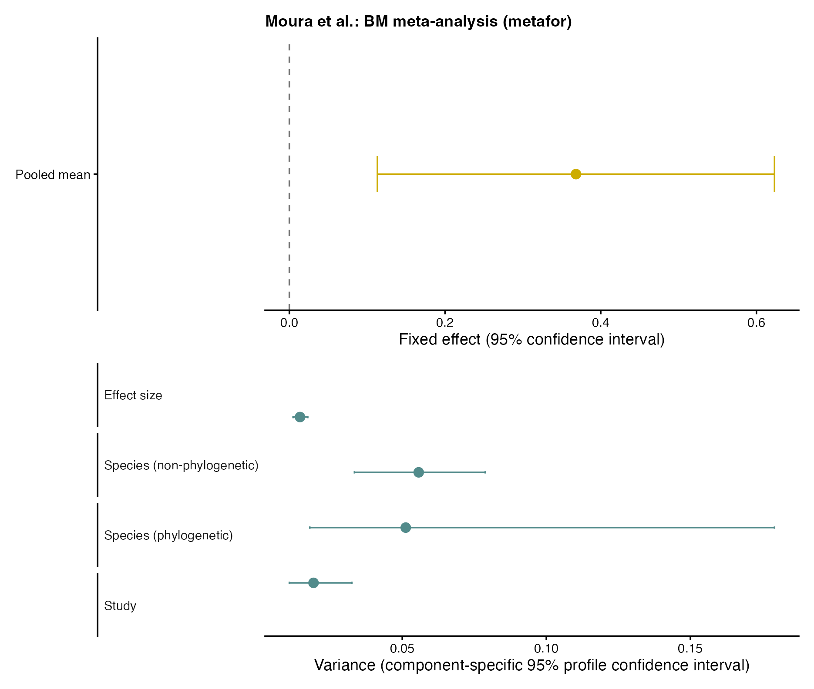
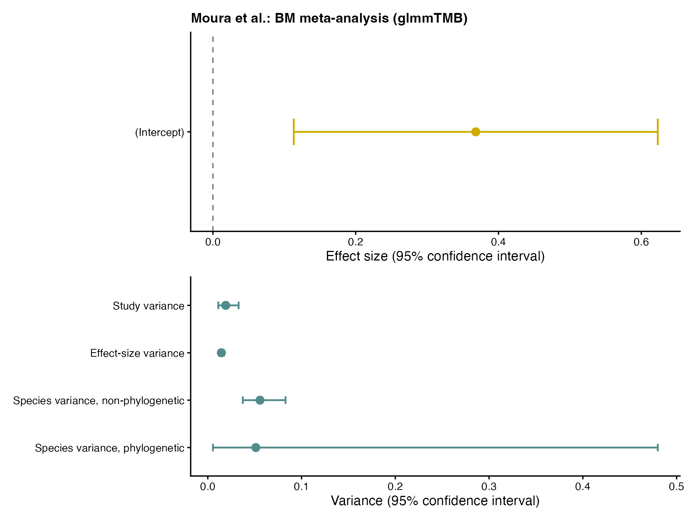
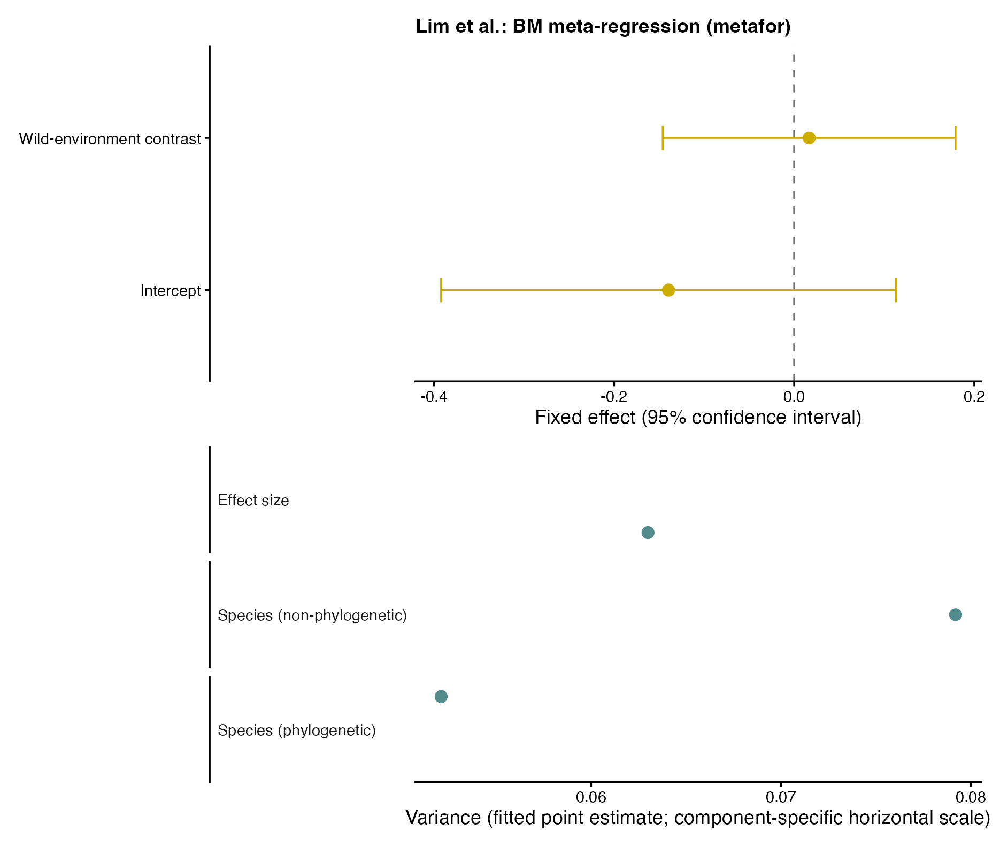
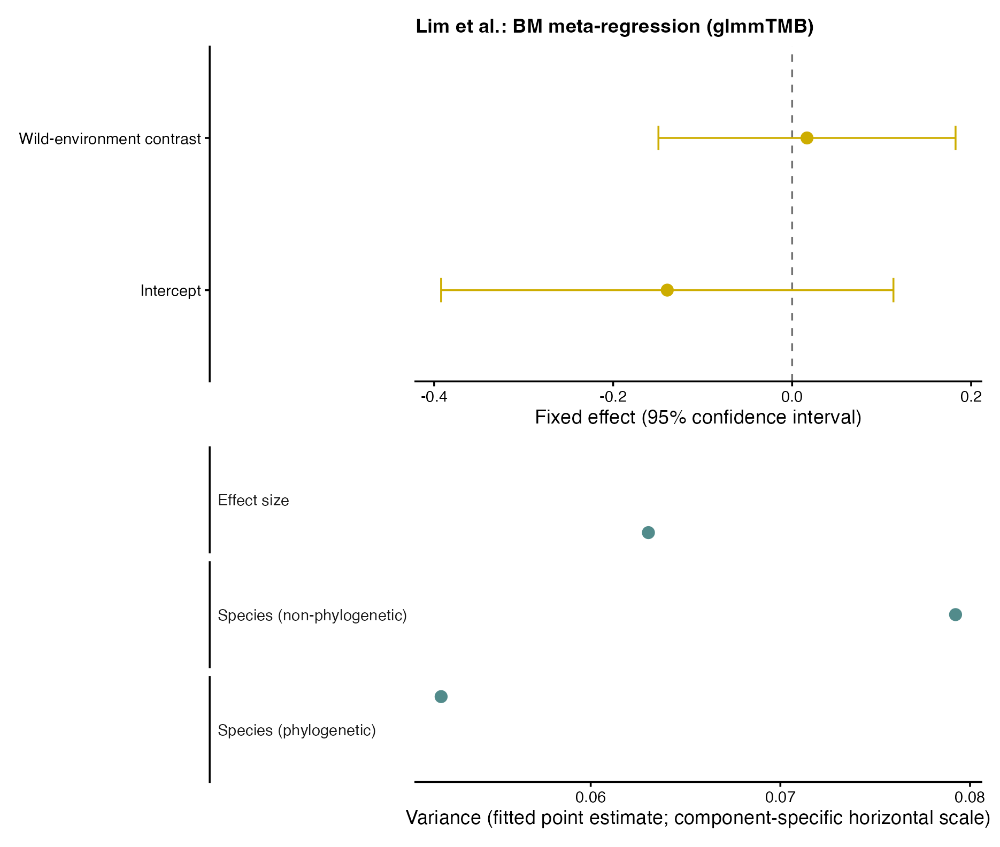
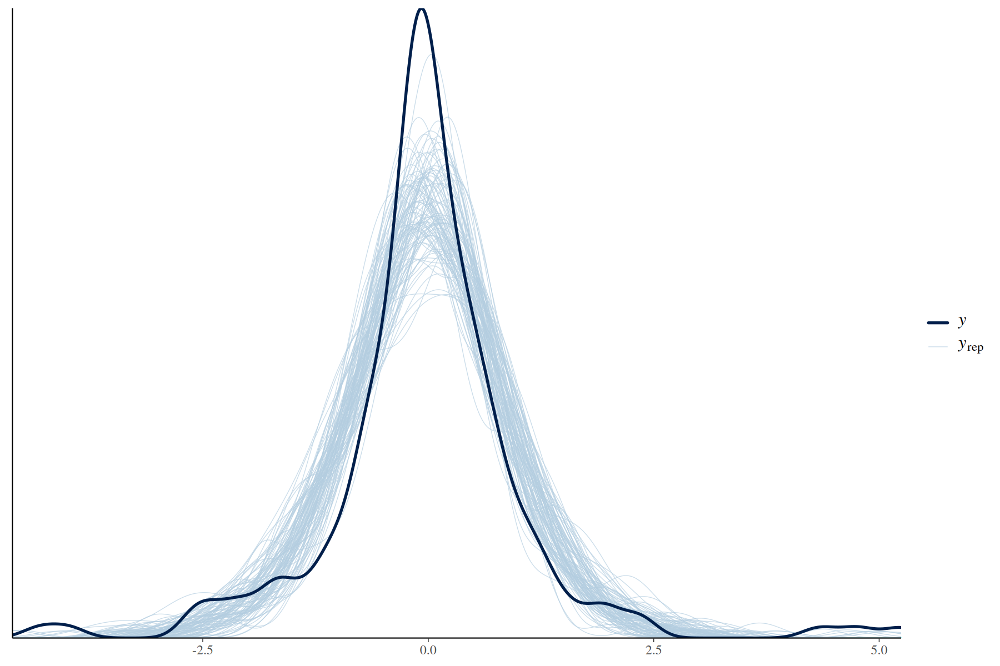

![]()
# install.packages("pacman") # if not already installed
pacman::p_load(brms, metafor, metadat, tidyverse, crayon, here, ape, patchwork, dplyr, tidyr, MCMCglmm, bayesplot, tidybayes, posterior, orchaRd,purrr, stringr, readr, magrittr, janitor, glmmTMB, rotl, sf, gtools)Intended audience and scope
This online tutorial accompanies our tutorial paper: A unified framework for phylogenetic and spatial meta-analysis: concepts, implementation, and practical guidance [LINK]
This is intended for researchers who already have a basic understanding of meta-analysis and some familiarity with statistical modelling in R. It is aimed at readers who are interested in phylogenetic and spatial meta-analytic modelling, given the increasing availability of large-scale datasets that include species-level traits and geographic information.
In this online tutorial, we demonstrate how to conduct phylogenetic and spatial meta-analyses using R packages such as metafor, brms, and glmmTMB. We provide step-by-step instructions on creating phylogenetic and spatial correlation matrices, fitting models with different correlation structures, and interpreting the results.
Setup
Set up parallel processing for brms - please adjust according to your computer’s capabilities.
max_cores <- 10
num_chains <- 2
threads_per_chain <- floor(max_cores / num_chains)
options(mc.cores = num_chains) Phylogenetic meta-analysis
How to make phylogenetic correlation matrix?
First, we will show how to make a phylogenetic correlation matrix to account for the shared evolutionary history of species in your meta-analytic dataset. A phylogenetic correlation matrix reflects how closely related species are. Relations among a set of species (phylogenies) can be derived in two main ways:
- Using a specific phylogenetic tree
- Using the
rotlpackage (accessing a synthetic tree from Open Tree of Life; https://opentreeoflife.github.io/)
In the following two sections, we introduce how to make the correlation matrix from phylogenetic trees in these two ways. When making a correlation matrix from a phylogenetic tree we need to assume an evolutionary model (process), which determines how branch lengths are transformed into expected covariances between species. The example below demonstrates how to compute a correlation matrix under the Brownian motion process.
In some cases, the phylogenetic relationships among the species of interest are already well established, and a corresponding phylogenetic tree for a given taxon is available from a published source or a public repository. When this is the case, it is usually preferable to use the existing tree rather than constructing a new one. For example, large, time-calibrated phylogenies are available for many taxonomic groups (e.g. birds, mammals, plants), often accompanied by branch lengths and documentation of the underlying assumptions. Using such trees ensures consistency with previous studies and avoids unnecessary reconstruction steps
We now illustrate how to use an existing phylogenetic tree provided as a file and prepare it for use in downstream analyses, such as phylogenetic meta-analysis (of course, you can also apply what we explain to broader phylogenetic comparative analysis.)
Step 1. Read the tree from a file
Phylogenetic trees are commonly distributed in formats such as Newick (.nwk, .tre) or Nexus (.nex). The ape package can read most of these standard-format files.
Here, we will use a sample dataset on Sylviidae (Sylviid warblers; a family of passerines). We have a Nexus file containing a phylogenetic tree for 294 species from the Sylvidae family. However, our meta-analytic dataset only includes 10 species (for didactic purposes). So, we first need to “prune” the tree to remove those species that are not in our data set.
library(ape)
#load ape library for reading and manipulating phylogenetic trees in R
dat <- read.csv(here("data", "Sylviidae_dat.csv"))
dat$Phylo
# [1] "Abroscopus_albogularis" "Abroscopus_schisticeps"
# [3] "Abroscopus_superciliaris" "Achaetops_pycnopygius"
# [5] "Acrocephalus_aedon" "Acrocephalus_aequinoctialis"
# [7] "Acrocephalus_agricola" "Acrocephalus_arundinaceus"
# [9] "Acrocephalus_atyphus" "Acrocephalus_australis"
# Load phylogenetic tree – note that this file contains multiple alternative trees
trees <- read.nexus(here("data", "Sylviidae.nex"))
# select the first tree from a list of many alternative trees for Sylviidae
tree <- trees[[1]]
#plot(tree) #you can try to plot the tree, but its going to be quite big!Step 2. Basic structural checks
Before using the tree in analyses, it is good practice to perform some basic checks to ensure that the tree structure is appropriate for the intended analysis (i.e. in this case, is the tree ultrametric and binary – see below).
# Check whether the tree is ultrametric (time-calibrated)
is.ultrametric(tree)
# [1] TRUE
# Check whether the tree is fully bifurcating
is.binary(tree)
# [1] TRUEStep 3. Match tree tip labels to the dataset
The species names in the tree (tip labels) must match exactly the species names used in the dataset.
# species names used in the dataset
species_data <- unique(dat$Phylo)
length(tree$tip.label) # number if species names on the tree tips
# [1] 294
length(species_data) # number of species names in the dataset
# [1] 10
# check for mismatches between tree tip labels and dataset species names
setdiff(species_data, tree$tip.label) # species names from the dataset not found in the tree
setdiff(tree$tip.label, species_data) # species names from the tree not found in the datasetGiven that we only have 10 species in the dataset and 294 species in the tree, most species from tree will not be present in the dataset. At this point, it is also very important to look at the other mismatch result, which checks whether all of the species in our dataset can be matched to the tree. If mismatches occur, we need to consider whether it is a truly missing species, typographical errors, outdated taxonomy, hybrid species which do not fit on binomial tree, or differences in naming conventions (e.g. using underscores vs spaces between name segments, or using subspecies names). These issues must be resolved manually before proceeding. In our example, we have a dataset with species names that match the tree, si we do not need to deal with such issues.
Step 4. Prune the tree to include only species in the dataset
Phylogenetic trees often contain more species than required for a given analysis (as in our example above). Extraneous tips should be removed to match the dataset.
tree_pruned <- drop.tip(tree,setdiff(tree$tip.label, species_data))
length(tree_pruned$tip.label) # check how many species left on the pruned tree
plot(tree_pruned) # check the pruned tree# check the binary and ultrametric status again
is.binary(tree_pruned)
# [1] TRUE
is.ultrametric(tree_pruned)
# [1] TRUEStep 5. Compute the phylogenetic correlation matrix
Once the tree is time-calibrated (= ultrametric), fully bifurcating (= binary), and pruned to match the dataset, you can compute the phylogenetic correlation matrix under a Brownian motion model using the vcv() function from the ape package.
A <- vcv(tree_pruned, corr = TRUE)
# check the dimensions and preview the top-left block
dim(A) This matrix represents the expected pirwise correlation among species due to shared evolutionary history and can be used directly in phylogenetic comparative or meta-analytic models.
In practice, you will not always have a phylogenetic tree readily available for the species in your dataset. In such cases, the rotl package can be used to access the Open Tree of Life and retrieve a tree based on the Latin species names in your dataset.
Note
- Make sure that the species names in your dataset are in Latin (scientific names) and are spelled correctly. The
rotlpackage relies on these names to find the corresponding species in the Open Tree of Life (https://opentreeoflife.github.io/use). - The OpenTree synthetic tree and name resolution services are actively updated. Running the same code at different times may yield slightly different trees due to updates in the database.
- For reproducible research, it is good practice to save the retrieved tree to a file (e.g., in Newick or Nexus format) after obtaining it using
rotl. This way, you can ensure that you are using the same tree in future analyses. - Automated name matching is convenient but may not always be perfect. It is advisable to manually check the matched names to ensure accuracy.
# install and load necessary packages - if not already installed
# install.packages("rotl")
# install.packages("ape")
library(rotl)
library(ape)
# record info about OpenTree version
tol_about()
# OpenTree Synthetic Tree of Life.
# Tree version: opentree16.1
# Taxonomy version: 3.7draft3
# Constructed on: 2025-12-20 00:55:58
# Number of terminal taxa: 2385875
# Number of source trees: 2064
# Number of source studies: 1931
# Source list present: false
# Root taxon: cellular organisms
# Root ott_id: 93302
# Root node_id: ott93302Step 1. Provide a species list
Here, we use 10 commonly used lab model taxa across different animal groups as an example. Use Latin names, not common names.
# make species list
myspecies <- c(
"Escherichia colli", # typo on purpose
"Chlamydomonas reinhardtii",
"Drosophila melanogaster",
"Arabidopsis thaliana",
"Rattus norvegicus",
"Mus musculus",
"Cavia porcellus",
"Xenopus laevis",
"Saccharomyces cervisae", # typo on purpose
"Danio rerio"
)Step 2. Resolve species names using OpenTree TNRS
We start with strict matching to identify exact matches and flag names that may require manual attention. We then use approximate matching only as a diagnostic step for unresolved names, because fuzzy matches can help detect likely typos or synonyms but should always be checked before being accepted.
# strict matching first:
taxa_strict <- tnrs_match_names(
names = myspecies,
do_approximate_matching = FALSE # set FALSE
)
# Warning message:
# Escherichia colli, Saccharomyces cervisae are not matched
taxa_strict
# search_string unique_name approximate_match score
# 1 escherichia colli <NA> NA NA
# 2 chlamydomonas reinhardtii Chlamydomonas reinhardtii FALSE 1
# 3 drosophila melanogaster Drosophila melanogaster FALSE 1
# 4 arabidopsis thaliana Arabidopsis thaliana FALSE 1
# 5 rattus norvegicus Rattus norvegicus FALSE 1
# 6 mus musculus Mus musculus FALSE 1
# 7 cavia porcellus Cavia porcellus FALSE 1
# 8 xenopus laevis Xenopus laevis FALSE 1
# 9 saccharomyces cervisae <NA> NA NA
# 10 danio rerio Danio rerio FALSE 1
# ott_id is_synonym flags number_matches
# 1 NA NA <NA> NA
# 2 33153 FALSE 1
# 3 505714 FALSE 1
# 4 309263 FALSE 1
# 5 271555 FALSE 1
# 6 542509 FALSE 1
# 7 744000 FALSE 1
# 8 465096 FALSE 1
# 9 NA NA <NA> NA
# 10 1005914 FALSE 1
# fuzzy matching for unresolved names:
taxa <- tnrs_match_names(
names = myspecies,
do_approximate_matching = TRUE # set TRUE
)
taxa
# search_string unique_name approximate_match
# 1 escherichia colli Escherichia coli TRUE
# 2 chlamydomonas reinhardtii Chlamydomonas reinhardtii FALSE
# 3 drosophila melanogaster Drosophila melanogaster FALSE
# 4 arabidopsis thaliana Arabidopsis thaliana FALSE
# 5 rattus norvegicus Rattus norvegicus FALSE
# 6 mus musculus Mus musculus FALSE
# 7 cavia porcellus Cavia porcellus FALSE
# 8 xenopus laevis Xenopus laevis FALSE
# 9 saccharomyces cervisae Saccharomyces cerevisiae TRUE
# 10 danio rerio Danio rerio FALSE
# score ott_id is_synonym flags number_matches
# 1 0.9375000 474506 FALSE sibling_higher 2
# 2 1.0000000 33153 FALSE 1
# 3 1.0000000 505714 FALSE 1
# 4 1.0000000 309263 FALSE 1
# 5 1.0000000 271555 FALSE 1
# 6 1.0000000 542509 FALSE 1
# 7 1.0000000 744000 FALSE 1
# 8 1.0000000 465096 FALSE 1
# 9 0.9166667 356221 FALSE 2
# 10 1.0000000 1005914 FALSE 1In this example, the strict match flags two misspelled names, and approximate matching helps identify their likely intended taxa. In practice, once these likely matches have been identified, it is better to correct the original species names and rerun strict matching than to proceed with fuzzy matches in the final workflow.
If the strict match fails or returns NAs, you can enable approximate matching. Approximate matching uses fuzzy string matching to find the closest matches in the OpenTree taxonomy, but you should always inspect the returned matches carefully.
Key columns to check include
unique_name: the matched OpenTree taxon nameott_id: the OpenTree taxonomy identifier used for tree retrievalapproximate_match:TRUEindicates a non-exact match, for example due to a typois_synonym:TRUEindicates the input name was treated as a synonym
A useful rule of thumb is as follows:
- if
approximate_match == TRUEand the reason is an obvious typo, correct the original species list and rerun the name matching. This ensures that the final dataset contains clean and unambiguous names. - If a match looks suspicious, for example because the matched taxon belongs to a different genus or the name could plausibly refer to multiple taxa, do not accept the match blindly. Instead, inspect the additional information returned by
tnrs_match_names()to confirm that the matched taxon is indeed the one you intended to include.
Step 3. Fix typos and re-run matching
myspecies_fixed <- c(
"Escherichia coli",
"Chlamydomonas reinhardtii",
"Drosophila melanogaster",
"Arabidopsis thaliana",
"Rattus norvegicus",
"Mus musculus",
"Cavia porcellus",
"Xenopus laevis",
"Saccharomyces cerevisiae",
"Danio rerio"
)
taxa_fixed <- tnrs_match_names(
names = myspecies_fixed,
do_approximate_matching = FALSE
)
# taxa_fixed
# search_string unique_name approximate_match score
# 1 escherichia coli Escherichia coli FALSE 1
# 2 chlamydomonas reinhardtii Chlamydomonas reinhardtii FALSE 1
# 3 drosophila melanogaster Drosophila melanogaster FALSE 1
# 4 arabidopsis thaliana Arabidopsis thaliana FALSE 1
# 5 rattus norvegicus Rattus norvegicus FALSE 1
# 6 mus musculus Mus musculus FALSE 1
# 7 cavia porcellus Cavia porcellus FALSE 1
# 8 xenopus laevis Xenopus laevis FALSE 1
# 9 saccharomyces cerevisiae Saccharomyces cerevisiae FALSE 1
# 10 danio rerio Danio rerio FALSE 1
# ott_id is_synonym flags number_matches
# 1 474506 FALSE sibling_higher 1
# 2 33153 FALSE 1
# 3 505714 FALSE 1
# 4 309263 FALSE 1
# 5 271555 FALSE 1
# 6 542509 FALSE 1
# 7 744000 FALSE 1
# 8 465096 FALSE 1
# 9 356221 FALSE 1
# 10 1005914 FALSE 1At this point, you should confirm that: - All species have a valid ott_id. - the returned matches correspond to the intended taxa.
Step 4. Retrieve the phylogenetic tree from OpenTree
Once you are satisfied with the matched OpenTree identifiers, you can request a trimmed subtree from the OpenTree synthetic tree using tol_induced_subtree(). At this stage, the OpenTree subtree provides a convenient phylogenetic topology for the matched taxa. However, before using it in comparative or meta-analytic models, you should still check whether the tip labels are appropriate, whether branch lengths are available, and whether the tree satisfies assumptions such as bifurcation and ultrametricity.
tree <- tol_induced_subtree(
ott_ids = taxa_fixed[["ott_id"]],
label_format = "name"
)
# returns a trimmed subtree as an ape::phylo object
# warnings about collapsing single nodes are common and usually not problematic hereStep 5. Clean and standardise tip labels
The tip labels returned by OpenTree are not always directly ready for downstream analyses. They may contain underscores, appended identifiers, or labels corresponding to internal nodes rather than named terminal taxa. The goal of this step is therefore to standardise the labels for readability and to check that each tip can be matched unambiguously to the intended species in the dataset.
In our example, one tip is labelled "mrcaott616ott617" rather than Escherichia coli. This is a non-taxon internal node within Bacteria, which can arise when only one representative from a large clade is included. Since there are no other bacteria in the dataset and the tree position is appropriate for our purposes, we relabel this tip as Escherichia coli for didactic purposes.
tree$tip.label # see the current tree tip labels
# [1] "Arabidopsis_thaliana" "Chlamydomonas_reinhardtii"
# [3] "Mus_musculus" "Rattus_norvegicus"
# [5] "Cavia_porcellus" "Xenopus_laevis"
# [7] "Danio_rerio" "Drosophila_melanogaster"
# [9] "Saccharomyces_cerevisiae" "mrcaott616ott617"
# replace underscores with spaces for readability
tree$tip.label <- gsub("_", " ", tree$tip.label)
# inspect the lineage of the E. coli OTT identifier
ecoli <- tol_node_info(ott_id = 474506, include_lineage = TRUE)
tax_lineage(ecoli) # domain within Bacteria
# rank name unique_name ott_id
# 1 domain Bacteria Bacteria 844192
# 2 no rank cellular organisms cellular organisms 93302
# we can see what info is available for this genus - not much, looks like a messy bit of a tree flagged as "INCONSISTENT"
# tnrs_match_names(names = ("Escherichia"))
# relabel the MRCA-like tip for plotting and matching
tree$tip.label <- gsub("mrcaott616ott617", "Escherichia coli", tree$tip.label)We can now plot the cleaned tree for inspection. Note that branch lengths are not yet included, so at this stage the tree is mainly useful for checking topology and tip labels.
Step 6. Final checks (binary tree and matching tip labels)
Before using the tree in downstream analyses, it is good practice to confirm that:
- The tree is fully binary, if that is required for your method.
- The tip labels match exactly the species list in your dataset.
# check whether the tree is binary
is.binary(tree) # should return TRUE
# [1] TRUE
# check exact matching between the species list and tree tip labels
intersect(as.character(tree$tip.label), myspecies_fixed)
# [1] "Arabidopsis thaliana" "Chlamydomonas reinhardtii"
# [3] "Mus musculus" "Rattus norvegicus"
# [5] "Cavia porcellus" "Xenopus laevis"
# [7] "Danio rerio" "Drosophila melanogaster"
# [9] "Saccharomyces cerevisiae" "Escherichia coli"
setdiff(myspecies_fixed, as.character(tree$tip.label))
# character(0)
setdiff(as.character(tree$tip.label), myspecies_fixed)
# character(0)Step 7. Compute the phylogenetic correlation matrix (handling missing branch lengths)
At this point, the tree topology may be usable for plotting or simple inspection, but it is not yet guaranteed to be suitable for phylogenetic covariance calculations. In particular, vcv() requires branch lengths, and many comparative models additionally assume a fully bifurcating and often ultrametric tree. The Open Tree of Life synthetic tree often provides a well-resolved topology, but it does not always include branch lengths.
To compute a phylogenetic variance-covariance (VCV) or correlation matrix under a Brownian motion (BM) process, we use vcv() from the ape package. If the tree has no branch lengths, vcv() will fail with:
A <- vcv(tree, corr = TRUE)
# Error in vcv.phylo(tree, corr = TRUE) : the tree has no branch lengthsFor didactic purposes in this tutorial, we assign equal branch lengths to all edges (that is, all branch lengths are set to 1). This allows us to demonstrate the workflow and obtain a valid correlation matrix. In real analyses, you should consider using a tree with biologically meaningful branch lengths (for example, a time-calibrated phylogeny).
# check whether the OpenTree synthetic tree includes branch lengths
is.null(tree$edge.length)
# [1] TRUE # TRUE indicates that branch lengths are missing
# if branch lengths are missing, add equal branch lengths for didactic purposes
if (is.null(tree$edge.length)) {
tree$edge.length <- rep(1, nrow(tree$edge))
}
# compute the phylogenetic correlation matrix under Brownian motion
A <- vcv(tree, corr = TRUE)
# check the dimensions and preview the top-left block
dim(A) # should return the number of species (rows/columns)
# [1] 10 10
A[1:5, 1:5]
# Arabidopsis_thaliana Chlamydomonas_reinhardtii
# Arabidopsis_thaliana 1.0000000 0.6666667
# Chlamydomonas_reinhardtii 0.6666667 1.0000000
# Mus_musculus 0.2041241 0.2041241
# Rattus_norvegicus 0.2041241 0.2041241
# Cavia_porcellus 0.2182179 0.2182179
# Mus_musculus Rattus_norvegicus Cavia_porcellus
# Arabidopsis_thaliana 0.2041241 0.2041241 0.2182179
# Chlamydomonas_reinhardtii 0.2041241 0.2041241 0.2182179
# Mus_musculus 1.0000000 0.8750000 0.8017837
# Rattus_norvegicus 0.8750000 1.0000000 0.8017837
# Cavia_porcellus 0.8017837 0.8017837 1.0000000The subtree returned by OpenTree may be sufficient for demonstration purposes, but many phylogenetic models require additional assumptions about branching structure and branch lengths. We therefore illustrate how to diagnose and handle two common issues: polytomies and non-ultrametric trees.
A polytomy occurs when an internal node has more than two descendant branches (a multifurcation).
A non-ultrametric tree is a tree in which not all tips are equidistant from the root, meaning that the tree is not time-calibrated.
Many phylogenetic comparative and meta-analytic models assume a fully bifurcating and ultrametric tree, because the expected covariance among species is defined under a continuous-time branching process (for example Brownian motion or Ornstein–Uhlenbeck evolution). Here we illustrate what these issues mean, and how they can be handled, using a simple toy example.
Create a toy tree with a polytomy
library(ape)
library(phytools)
# A simple tree with one polytomy (A, B, C diverge simultaneously)
tree_poly <- read.tree(text = "((A,B,C),D,E);")
plot(tree_poly)is.binary(tree_poly)
# [1] FALSEHere, species A, B, and C form a polytomy because their common ancestor has three descendants instead of two…
Under a Brownian motion or OU model, the phylogenetic covariance matrix is derived from branch lengths along a fully specified bifurcating tree.
When a node is a polytomy, the relative order of divergence among its descendants is undefined, which means that their shared evolutionary history cannot be uniquely translated into a covariance structure.
Resolving polytomies
multi2di() resolves a polytomy by inserting very short branches, creating an arbitrary but fully bifurcating tree. This corresponds to assuming that the true branching order is unknown but occurred over a very short evolutionary time.
set.seed(1)
tree_bin <- multi2di(tree_poly, random = TRUE)is.binary(tree_bin)
# [1] TRUEtree_bin <- multi2di(tree_poly, random = TRUE)
plot(tree_bin)Because the resolution is random, different runs of multi2di() will yield different bifurcating trees. If you want reproducible results, set a random seed before calling multi2di().
set.seed(15)
tree_bin1 <- multi2di(tree_poly, random = TRUE)
set.seed(50)
tree_bin2 <- multi2di(tree_poly, random = TRUE)Create a non-ultrametric toy tree
tree_nonultra <- read.tree(text = "((A:2,B:2):3,(C:1,D:4):2,E:5);")
is.ultrametric(tree_nonultra)
# [1] FALSEAs you can see, the tips do not all end at the same distance from the root, so the tree is not ultrametric. This means that branch lengths cannot be interpreted directly as shared evolutionary time, which is required for Brownian motion or Ornstein–Uhlenbeck based phylogenetic covariance models.
chronos() estimates branch lengths under a relaxed molecular clock, producing a tree in which all tips represent the same present time.
This is required when phylogenetic covariance is interpreted as shared evolutionary time.
tree_ultra1 <- chronos(tree_nonultra)is.ultrametric(tree_ultra1)
# [1] TRUEOr, you can use force.ultrametric() from the phytools package to coerce a tree into an ultrametric form by extending branch lengths.
tree_ultra2 <- force.ultrametric(tree_nonultra, method = "extend")
is.ultrametric(tree_ultra2)In practice, the typical workflow is:
- Check whether the tree is binary and ultrametric.
- If polytomies are present, resolve them using
multi2di(), ideally multiple times. - If the tree is not ultrametric, apply a dating method such as
chronos()or use a time-calibrated tree from the literature. - Only then compute the phylogenetic covariance or correlation matrix using
vcv().
This ensures that the phylogenetic random effect used in meta-analysis corresponds to a well-defined evolutionary model.
Examples from real meta-analyses
1. Moura et al. (2021)
Here we use the dataset from Moura et al. (2021), which collated 1,828 effect sizes from 457 studies and 341 animal species to investigate assortative mating patterns. Each effect size is a Fisher’s Z transformed correlation coefficient for body size correlations paired couples for within a single population and sampling period; each correlation is species-specific, and there are multiple correlations per species. The effect size indicates how strongly mates resemble each other in body size across a very broad taxonomic and ecological range. The dataset and phylogenetic tree are available in the metadat package as dat.moura2021.
Before fitting hierarchical meta-analytic models, it is important to assess whether key categorical predictor variables have sufficient replication to support the estimation of random effects (or fixed effects). In particular, the identifiability of variance components depends on having an adequate number of levels for each random factor, as well as repeated observations within those levels.
So, we begin by summarising the number of unique levels for all categorical variables in the dataset, with particular attention to variables commonly used as random effects in meta-analysis, such as study identity, species identity, and effect-size identity.
# read data from metadat package
dat_moura2021 <- dat.moura2021$dat
# duplicate the column with species name - additional column is needed for adding phylogenetic correlation matrix and non-phylogenetic random effect separately.
dat_moura2021$species.id.phy <- dat_moura2021$species.id
# add a column to be used as an ID of effect sizes to specify random errors in the meta-analytic model
dat_moura2021$effect.size.id <- 1:nrow(dat_moura2021)
# convert ID of effect sizes to a factor (categorical) variable
dat_moura2021$effect.size.id <- as.factor(dat_moura2021$effect.size.id)
## check data structure
cat_vars <- dat_moura2021 |>
dplyr::select(where( ~ is.factor(.x) || is.character(.x)))
n_levels <- cat_vars |>
dplyr::summarise(across(
everything(),
~ dplyr::n_distinct(.x)
)) |>
tidyr::pivot_longer(
cols = everything(),
names_to = "variable",
values_to = "n_levels"
)
n_levels # shows how many levels each categorical variable has
# # A tibble: 13 × 2
# variable n_levels
# <chr> <int>
# 1 study.id 457
# 2 effect.size.id 1828
# 3 species 345
# 4 species.id 341
# 5 subphylum 11
# 6 phylum 3
# 7 assortment.trait 233
# 8 trait.dimensions 5
# 9 field.collection 2
# 10 pooled.data 2
# 11 spatially.pooled 2
# 12 temporally.pooled 2
# 13 species.id.phy 341The dataset contains 1,828 effect sizes (effect.size.id) drawn from 457 independent studies (study.id) and 341 animal species (species.id.phy). This provides replication at both the study and species levels, which is generally important for estimating random-effects variance components. There is, however, no universal rule for what constitutes sufficient replication, because this depends on the number of levels, the distribution of observations across levels, and the magnitudes of the variance components. As a general guide, variance components are more likely to be estimable when each random effect has multiple levels and when at least some levels contribute repeated observations. In the present dataset, the relatively large number of species particularly supports the inclusion of species-level random effects, including both non-phylogenetic (species.id) and phylogenetic (species.id.phy) terms.
Let’s move on to compute the phylogenetic correlation matrix. A matching tree is supplied as a data object in the metadat package, so we just load it and can compute the matrix without additional checking and processing
# read tree from metadat package
tree <- dat.moura2021$tree
# calculate r-to-z transformed correlations and corresponding sampling variances
dat_moura2021 <- escalc(measure = "ZCOR", ri = ri, ni = ni, data = dat_moura2021)
# turn tree into an ultrametric onevusing the default "Grafen" method (Grafen 1989)
tree <- compute.brlen(tree)
# compute phylogenetic correlation matrix
A <- vcv(tree, corr = TRUE)
# check ultrametricity
is.ultrametric(tree)Brownian motion (meta-analysis)
The Brownian Motion (BM) model assumes that traits evolve according to a random walk process along the branches of the phylogenetic tree. BM is default model for continuous trait evolution in comparative methods. In the model, the expected variance-covariance structure among species is directly proportional to their shared evolutionary history, as represented by the phylogenetic tree.
phylo_eg1_meta_ma_BM <- rma.mv(yi, vi,
random = list(
~ 1 | study.id, # among-study variation
~ 1 | effect.size.id, # additional effect-size-level variation
~ 1 | species.id, # species-specific, non-phylogenetic variation
~ 1 | species.id.phy), # species-specific, phylogenetic variation
R = list(species.id.phy = A), # Brownian motion phylogenetic correlation matrix
data = dat_moura2021,
verbose = TRUE,
sparse = TRUE,
method = "REML"
)
summary(phylo_eg1_meta_ma_BM)
# Multivariate Meta-Analysis Model (k = 1828; method: REML)
#
# logLik Deviance AIC BIC AICc
# -167.6726 335.3453 345.3453 372.8974 345.3782
#
# Variance Components:
#
# estim sqrt nlvls fixed factor R
# sigma^2.1 0.0192 0.1384 457 no study.id no
# sigma^2.2 0.0145 0.1202 1828 no effect.size.id no
# sigma^2.3 0.0557 0.2359 341 no species.id no
# sigma^2.4 0.0512 0.2263 341 no species.id.phy yes
#
# Test for Heterogeneity:
# Q(df = 1827) = 10743.8076, p-val < .0001
#
# Model Results:
#
# estimate se zval pval ci.lb ci.ub
# 0.3682 0.1300 2.8311 0.0046 0.1133 0.6230 **
confint(phylo_eg1_meta_ma_BM)
# estimate ci.lb ci.ub
# sigma^2.1 0.0192 0.0108 0.0325
# sigma.1 0.1384 0.1038 0.1802
# estimate ci.lb ci.ub
# sigma^2.2 0.0145 0.0121 0.0172
# sigma.2 0.1202 0.1099 0.1311
# estimate ci.lb ci.ub
# sigma^2.3 0.0557 0.0334 0.0788
# sigma.3 0.2359 0.1827 0.2807
# estimate ci.lb ci.ub
# sigma^2.4 0.0512 0.0179 0.1792
# sigma.4 0.2263 0.1336 0.4233
# calculate I2 estimate
orchaRd::i2_ml(phylo_eg1_meta_ma_BM)
# I2_Total I2_study.id I2_effect.size.id I2_species.id I2_species.id.phy
# 97.30527 13.26902 10.00808 38.55098 35.47718
# estimate phylogenetic heritability
phylo_heritability <- phylo_eg1_meta_ma_BM$sigma2[4] / (phylo_eg1_meta_ma_BM$sigma2[4] + phylo_eg1_meta_ma_BM$sigma2[3])
phylo_heritability
# [1] 0.479239The overall estimate \(\beta_0\) is 0.368 (95% CI 0.113, 0.623) on the Fisher’s Z scale. Back transforming to the Pearson’s r, this corresponds to a correlation of roughly 0.35 - which indicates a positive correlation between mates in body size across species. On average, larger males tend to pair with larger females across species.
The \(I^2\) (\(\approx\) 97.31%) indicate that there is high heterogeneity among studies, effect sizes, species, and phylogenetic relatedness. About 35.48% of the total variance can be attributed to phylogenetic relatedness among species, indicating a moderate phylogenetic signal in mate size correlation. Biologically, this means that different species tend to have different average levels of mate size correlation, and closely related species tend to have more similar levels of mate size correlation than distantly related species.
By partitioning species level variance into phylogenetic and non-phylogenetic components, we can estimate the phylogenetic heritability (or Pagel’s \(\lambda\)) of mate size correlation. This implies that about 48 percent of the differences among species in assortative mating strength are explained by phylogenetic relatedness.
In other words, closely related species tend to have similar levels of size assortative mating, but nearly half of the variation is species specific and not explained by shared ancestry.
We show two ways of specifying sampling error in brms:
Using
se(sqrt(vi))to supply known standard errors.Representing sampling error explicitly via a group level term with a known variance covariance structure. In this formulation, the term
(1 | gr(effect.size.id, cov = vcv))defines a random effect whose covariance matrix is fixed to the diagonal matrix of sampling variances for lnRR. This is mathematically equivalent to providing a sampling variance matrix tometafor::rma.mv(), but implemented within brms.
Because sampling variances are treated as known in meta analysis, the standard deviation of this group level term is fixed to 1. Consequently, the magnitude of sampling error is fully determined by the supplied variance covariance matrix and is not estimated from the data.
The second approach is less common, but it can be much faster than usual (see more detailed information: link).
If you are not familiar with brms, we highly recommend checking out the instruction of brms first.
1. Using se(sqrt(vi))
In this specification, sampling error is modelled by supplying known standard errors via se() in the model formula. The expression yi|se(sqrt(vi)) indicates that the response variable yi has known standard errors equal to the square root of the sampling variances vi. Under this formulation, brms treats the observed effect sizes as noisy measurements of latent true effects. The remaining terms in the model specify sources of between study and between species variation in these latent true effects. Specifically, (1 | study.id) and (1 | effect.size.id) model study level and effect size level heterogeneity, (1 | species.id) and (1 | gr(species.id.phy, cov = A)) model non phylogenetic and phylogenetic species level variation, respectively.
fit_phylo_eg1_brms_ma <- bf(yi | se(sqrt(vi)) ~ 1 +
(1 | study.id) +
(1 | effect.size.id) +
(1 | species.id) +
(1 | gr(species.id.phy, cov = A))
)
# set prior
prior_brms1 <- get_prior(
formula = fit_phylo_eg1_brms_ma,
data = dat_moura2021,
data2 = list(A = A),
family = gaussian()
)
phylo_eg1_brms_ma <- brm(
formula = fit_phylo_eg1_brms_ma,
family = gaussian(),
data = dat_moura2021,
data2 = list(A = A),
prior = prior_brms1,
iter = 10000,
warmup = 7000,
chains = num_chains,
backend = "cmdstanr",
threads = threading(threads_per_chain),
control = list(adapt_delta = 0.95, max_treedepth = 15)
)
summary(phylo_eg1_brms_ma)
# Family: gaussian
# Links: mu = identity
# Formula: yi | se(sqrt(vi)) ~ 1 + (1 | study.id) + (1 | effect.size.id) + (1 | species.id) + (1 | gr(species.id.phy, cov = A))
# Data: dat_moura2021 (Number of observations: 1828)
# Draws: 2 chains, each with iter = 10000; warmup = 7000; thin = 1;
# total post-warmup draws = 6000
#
# Multilevel Hyperparameters:
# ~effect.size.id (Number of levels: 1828)
# Estimate Est.Error l-95% CI u-95% CI Rhat Bulk_ESS Tail_ESS
# sd(Intercept) 0.12 0.01 0.11 0.13 1.00 2091 3894
#
# ~species.id (Number of levels: 341)
# Estimate Est.Error l-95% CI u-95% CI Rhat Bulk_ESS Tail_ESS
# sd(Intercept) 0.23 0.03 0.17 0.28 1.00 795 1292
#
# ~species.id.phy (Number of levels: 341)
# Estimate Est.Error l-95% CI u-95% CI Rhat Bulk_ESS Tail_ESS
# sd(Intercept) 0.27 0.09 0.14 0.50 1.00 1158 954
#
# ~study.id (Number of levels: 457)
# Estimate Est.Error l-95% CI u-95% CI Rhat Bulk_ESS Tail_ESS
# sd(Intercept) 0.14 0.02 0.11 0.18 1.00 661 1223
#
# Regression Coefficients:
# Estimate Est.Error l-95% CI u-95% CI Rhat Bulk_ESS Tail_ESS
# Intercept 0.37 0.16 0.05 0.70 1.00 3504 2965
#
# Further Distributional Parameters:
# Estimate Est.Error l-95% CI u-95% CI Rhat Bulk_ESS Tail_ESS
# sigma 0.00 0.00 0.00 0.00 NA NA NA2. Using gr(…, vcv = vcv)
In this alternative specification, sampling error is represented explicitly as a group level effect with a known variance covariance structure. The term (1 | gr(effect.size.id, cov = vcv)) defines a random effect for each effect size whose covariance matrix is fixed to vcv, a diagonal matrix containing the sampling variances v_i on the diagonal. This implies the following hierarchical formulation:
\(\text{Sampling error} \sim \mathcal{N}(0, V),\)
where is the supplied variance covariance matrix vcv. In this setup, sampling error is modelled as a latent random effect rather than being placed directly in the likelihood via se().
Because sampling variances are treated as known in meta analysis, the standard deviation of this group level term is fixed to 1 using constant(1). As a result, the magnitude of the sampling error is entirely determined by the supplied matrix V and is not estimated from the data.
This formulation is mathematically equivalent to providing a sampling variance matrix to metafor::rma.mv(), but implemented here within the brms modeling framework. It also yields the same likelihood for the observed effect sizes as the se(sqrt(vi)) approach, differing only in how sampling error is represented in the model.
vcv <- diag(dat_moura2021$vi)
rownames(vcv) <- colnames(vcv) <- dat_moura2021$effect.size.id
fit_phylo_eg1.1_brms_ma <- bf(yi ~ 1 +
(1 | study.id) +
(1 | species.id) +
(1 | gr(species.id.phy, cov = A)) +
(1 | gr(effect.size.id, cov = vcv))
)
prior_brms1.1 <- c(
default_prior(fit_phylo_eg1.1_brms_ma,
data = dat_moura2021,
data2 = list(A = A, vcv = vcv),
family = gaussian()),
set_prior("constant(1)", class = "sd", group = "effect.size.id"),
replace = TRUE
)
phylo_eg1.1_brms_ma <- brm(
formula = fit_phylo_eg1.1_brms_ma,
family = gaussian(),
data = dat_moura2021,
data2 = list(A = A, vcv = vcv),
prior = prior_brms1.1,
iter = 18000,
warmup = 10000,
chains = num_chains,
backend = "cmdstanr",
threads = threading(threads_per_chain),
control = list(adapt_delta = 0.98, max_treedepth = 18)
)
summary(phylo_eg1.1_brms_ma)
# Family: gaussian
# Links: mu = identity
# Formula: yi ~ 1 + (1 | study.id) + (1 | species.id) + (1 | gr(species.id.phy, cov = A)) + (1 | gr(effect.size.id, cov = vcv))
# Data: dat_moura2021 (Number of observations: 1828)
# Draws: 2 chains, each with iter = 18000; warmup = 10000; thin = 1;
# total post-warmup draws = 16000
#
# Multilevel Hyperparameters:
# ~effect.size.id (Number of levels: 1828)
# Estimate Est.Error l-95% CI u-95% CI Rhat Bulk_ESS Tail_ESS
# sd(Intercept) 1.00 0.00 1.00 1.00 NA NA NA
#
# ~species.id (Number of levels: 341)
# Estimate Est.Error l-95% CI u-95% CI Rhat Bulk_ESS Tail_ESS
# sd(Intercept) 0.23 0.03 0.17 0.28 1.00 1390 1570
#
# ~species.id.phy (Number of levels: 341)
# Estimate Est.Error l-95% CI u-95% CI Rhat Bulk_ESS Tail_ESS
# sd(Intercept) 0.27 0.09 0.15 0.50 1.00 1788 1515
#
# ~study.id (Number of levels: 457)
# Estimate Est.Error l-95% CI u-95% CI Rhat Bulk_ESS Tail_ESS
# sd(Intercept) 0.14 0.02 0.11 0.18 1.00 1068 1500
#
# Regression Coefficients:
# Estimate Est.Error l-95% CI u-95% CI Rhat Bulk_ESS Tail_ESS
# Intercept 0.37 0.16 0.03 0.70 1.00 6398 6604
#
# Further Distributional Parameters:
# Estimate Est.Error l-95% CI u-95% CI Rhat Bulk_ESS Tail_ESS
# sigma 0.12 0.01 0.11 0.13 1.00 1801 3462Nice - the outputs are very similar to the previous model using se(), as expected and also consistent with the metafor results. In this fit, the phylogenetic species-level variance is slightly larger than the non-phylogenetic component, whereas the opposite pattern was observed in the metafor model.
The small differences in the estimates arise because this model is fitted in a Bayesian framework.
An \(I^2\) calculation requires an explicit choice of the variance components and denominator. That definition is not fixed in this tutorial yet, so the calculation is deferred.
# Define the chosen variance-partitioning and I2 denominator here before
# calculating I2. The earlier code referred to undefined objects and has been
# removed rather than imposing a definition.glmmTMB is a popular package for fitting generalised linear mixed models. Unlike dedicated meta-analytic packages such as metafor, it does not allow to easily account for known sampling variances of effect sizes - so when we implement a meta-analysis in glmmTMB, we need explicitly specify the sampling error structure of the effect sizes.
In practice, this require three steps:
1. Treating each effect size as a unique random-effect level
# random effects in glmmTMB are defined over factor levels. By converting the effect-size identifier into a factor, each effect size (i) is assigned its own random effect (e_i), which will represent its sampling error - this is what allows the model to attach the correlation variance (v_i) to each observation
dat_moura2021$effect.size.id <- as.factor(dat_moura2021$effect.size.id)In glmmTMB, grouping variables for random effects must be factors. By converting effect_size_ID to a factor, we ensure that each effect size is treated as a distinct level in the random-effects structure. This step is required for the model to correctly associate each observation with its corresponding sampling variance.
2. Specifying the random effect independent grouping structure
# the equalto() and propto() terms require a grouping variable, even when there is only one group. the dummy variable 'g' assigns all observations to single group, while the covariance structure is defined entirely by supplied matrices…
dat_moura2021$g <- 1 3. Constructing a variance-covariance matrix (VCV) that contains the known sampling variances of each effect size
# this creates a variance-covariance matrix - diagonal elements are the known sampling variances of the effect sizes. The off-diagonal elements are zero, reflecting the usual assumption that effect sizes are independent. This matrix plays the same rule as V = vi in metafor
VCV <- diag(dat_moura2021$vi, nrow = nrow(dat_moura2021))
rownames(VCV)<- colnames(VCV)<- dat_moura2021$effect.size.idWe create a variance–covariance matrix whose diagonal elements are the known sampling variances of the effect sizes. Off-diagonal elements are set to zero, reflecting the assumption that effect sizes are independent. This mirrors the standard assumption made in most meta-analyses.
The equalto() term in glmmTMB requires a grouping factor. The dummy variable g serves this purpose, which we set to a single level (one group), i.e. all observations are assigned to the same group. If the grouping factor had more than one level, each group would have a separate independent random-effect vector with the same variance-covariance parameters. For meta-analysis, this grouping factor should always have one level.
For more details, you can also refer to this vignette: https://cran.r-project.org/web/packages/glmmTMB/vignettes/covstruct.html
And the following supplementary material for fitting meta-analysis with glmmTMB: https://coraliewilliams.github.io/equalto_sim_study/webpage.html.
# reorders the rows and columns of the phylogenetic covariance matrix so that species appear in a consistent alphabetical order, ensuring that the matrix aligns correctly with the species factor used in the model.
A <- A[sort(rownames(A)), sort(rownames(A))]
system.time(
phylo_eg1_tmb <- glmmTMB(yi ~ 1 +
# the term equalto(0 + effect.size.id|g, VCV) specifies that the random effect associated with each effect size has a covariance structure defined by the matrix VCV. This effectively encodes the known sampling variances into the model
equalto(0 + effect.size.id|g, VCV) +
(1|study.id) +
# the terms (1|species.id) and propto(0 + species.id.phy|g, A) model non-phylogenetic and phylogenetic species-level variation, respectively. The propto() term uses the phylogenetic covariance matrix A to capture shared evolutionary history among species
(1|species.id) +
propto(0 + species.id.phy|g, A),
data = dat_moura2021,
REML = TRUE)
)Now, we want to know the model output. Although the fitted model is statistically equivalent to the models fitted metafor and brms, glmmTMB reports variance components in a different way, which can initially confusing…
head(confint(phylo_eg1_tmb), 10)
# 2.5 % 97.5 % Estimate
# (Intercept) 0.1132610 0.6230707 0.3681658
# Std.Dev.(Intercept)|study.id 0.1056462 0.1813458 0.1384142
# Std.Dev.(Intercept)|species.id 0.1932854 0.2879763 0.2359271
# Std.Dev.species.id.phyAcanthurus_leucosternon_ott388125|g.1 0.1293612 0.3959730 0.2263262
# Std.Dev.species.id.phyAcanthurus_nigricans_ott467313|g.1 0.1293612 0.3959730 0.2263262
# Std.Dev.species.id.phyAcanthurus_nigrofuscus_ott605289|g.1 0.1293612 0.3959730 0.2263262
# Std.Dev.species.id.phyAchatina_fulica_ott997087|g.1 0.1293612 0.3959730 0.2263262
# Std.Dev.species.id.phyAegithalos_glaucogularis_vinaceus_ott5560982|g.1 0.1293612 0.3959730 0.2263262
# Std.Dev.species.id.phyAethia_pusilla_ott855484|g.1 0.1293612 0.3959730 0.2263262
# Std.Dev.species.id.phyAgalychnis_callidryas_ott9483|g.1 0.1293612 0.3959730 0.2263262
sigma(phylo_eg1_tmb)^2
# [1] 0.01445014 # residual variance
phylo_eg1_tmb_varcor <- VarCorr(phylo_eg1_tmb)$cond
exp(phylo_eg1_tmb$fit$par)
# betadisp theta theta theta
# 0.12020875 0.13841423 0.23592711 0.05122353 <- residual, study.id, species.id, species.id.phyYou can see the outputs both summary() and confint(). The confint() output reports standard deviations (SD) of random effects, not variances
For example…
(Intercept) -> overall mean
Std.Dev.(Intercept) | study.id -> correspond to the square roots of study-level variance
Std.Dev.(Intercept) | species.id -> correspond to the square roots of non-phylogenetic species-level varianceYou see the output also includes many rows such as…
Std.Dev.species.id.phyAcanthurus_leucosternon_ott388125|g.1
Std.Dev.species.id.phyAcanthurus_nigricans_ott467313|g.1
do not represent separate variance parameters for each species. They are phylogenetic random effect! They are the conditional standard deviations of individual species’ phylogenetic random effects, which are all draws from the same multivariate normal distribution defined by the phylogenetic covariance matrix and a single scaling parameter. So, we should not be interpreted as species-specific variance components.
To obtain the actual variance parameters, it is more reliable to inspect the internal parameter vector:
exp(phylo_eg1_tmb$fit$par)
# betadisp -> residual SD
# theta[1] -> SD of study-level random effects
# theta[2] -> SD of non-phylogenetic species effects
# theta[3] -> Variance of phylogenetic effectsBut be careful - the meaning of theta can be changed. It depends on what random effect you included in your model. The residual variance is reported by sigma(model)^2.
Brownian motion (meta-regression)
We next extend the meta-analysis model by including the categorical moderator as a fixed effect (predictor). We will use variable called temporally.pooled (yes/no) as our moderator - it codes whether effect sizes were calculated from data pooled across multiple sampling periods. The resulting meta-regression model will allows us to examine whether methodological features of the primary studies help explain some of the variation among effect sizes, over and above the hierarchical and phylogenetic structure already accounted for.
phylo_eg1.1_meta_BM <- rma.mv(
yi, vi,
mods = ~ temporally.pooled,
random = list(
~ 1 | study.id,
~ 1 | effect.size.id,
~ 1 | species.id,
~ 1 | species.id.phy
),
R = list(species.id.phy = A),
data = dat_moura2021,
verbose = TRUE,
sparse = TRUE,
method = "REML"
)
summary(phylo_eg1.1_meta_BM)
# logLik Deviance AIC BIC AICc
# -165.9738 331.9476 343.9476 377.0069 343.9938
# Variance Components:
# estim sqrt nlvls fixed factor R
# sigma^2.1 0.0194 0.1393 457 no study.id no
# sigma^2.2 0.0145 0.1204 1828 no effect.size.id no
# sigma^2.3 0.0540 0.2323 341 no species.id no
# sigma^2.4 0.0520 0.2280 341 no species.id.phy yes
# Test for Residual Heterogeneity:
# QE(df = 1826) = 10668.4998, p-val < .0001
# Test of Moderators (coefficient 2):
# QM(df = 1) = 3.1936, p-val = 0.0739
# Model Results:
# estimate se zval pval ci.lb ci.ub
# intrcpt 0.3562 0.1311 2.7163 0.0066 0.0992 0.6132 **
# temporally.pooledyes 0.0395 0.0221 1.7871 0.0739 -0.0038 0.0829 . For studies without temporal pooling, the intercept \(\beta_0\) represents the estimated mean effect size and was 0.356 (95% CI 0.099, 0.613) on the Fisher’s Z scale. Relative to this baseline, temporally pooled studies tended to show slightly larger effect sizes on average, but the uncertainty interval overlapped zero (\(\beta_{\text{temporally.pooled}_{\text{yes}}}\) = 0.040, 95% CI = [-0.004, 0.083]).
Importantly, this inference is made while accounting for non-independence among effect sizes arising from shared studies, repeated measurements, species identity, and phylogenetic relatedness. Thus, the moderator effect reflects systematic differences associated with temporal pooling rather than confounding hierarchical structure.
orchaRd::r2_ml(phylo_eg1.1_meta_BM)
# R2_marginal R2_conditional
# 0.002500313 0.896644494 We further quantified the explanatory power of the model using marginal and conditional \(R^2\). The R2_marginal (0.003) represents the proportion of variance explained by the fixed effect alone, in this case the moderator temporally.pooled. In contrast, the conditional R2_conditional (0.897) reflects the variance explained by the full model, including both fixed effects and all random effects.
The very low marginal \(R^2\) indicates that temporal pooling explains only a negligible fraction of the total variability in effect sizes. By contrast, the high conditional \(R^2\) shows that most of the variation is captured by the hierarchical and phylogenetic structure of the model.
res1 <- orchaRd::mod_results(moura2021_BM_meta_reg, mod = "temporally.pooled", group = "study.id", subset = TRUE)
orchard_plot(res1,
mod = "temporally.pooled",
group = "study.id",
xlab = "Effect size (ZCOR)",
angle = 45) +
# scale_x_discrete(labels = c("Overall effect")) +
# scale_color_manual(values = "#CDBE70") +
# scale_fill_manual(values = "#EEDC82") +
# scale_y_continuous(breaks = seq(-4.0, 4.0, 1), limits = c(-4.0, 4.0)) +
theme_classic()vcv <- diag(dat_moura2021$vi)
rownames(vcv) <- colnames(vcv) <- dat_moura2021$effect.size.id
fit_phylo_eg1_brms_mr <- bf(yi ~ 1 + temporally.pooled +
(1 | study.id) +
(1 | species.id) +
(1 | gr(species.id.phy, cov = A)) +
(1 | gr(effect.size.id, cov = vcv))
)
prior_mr <- default_prior(fit_phylo_eg1_brms_mr,
data = dat_moura2021,
data2 = list(A = A, vcv = vcv),
family = gaussian())
prior_mr <- c(
prior_mr,
set_prior("constant(1)", class = "sd", group = "effect.size.id"),
replace = TRUE
)
system.time(
phylo_eg1_brms_mr <- brm(
formula = fit_phylo_eg1_brms_mr,
family = gaussian(),
data = dat_moura2021,
data2 = list(A = A, vcv = vcv),
prior = prior_mr,
iter = 12000,
warmup = 8000,
chains = num_chains,
backend = "cmdstanr",
threads = threading(threads_per_chain),
control = list(adapt_delta = 0.95, max_treedepth = 15)
)
)
summary(phylo_eg1_brms_mr)
# Family: gaussian
# Links: mu = identity
# Formula: yi ~ 1 + temporally.pooled + (1 | study.id) + (1 | species.id) + (1 | gr(species.id.phy, cov = A)) + (1 | gr(effect.size.id, cov = vcv))
# Data: dat_moura2021 (Number of observations: 1828)
# Draws: 2 chains, each with iter = 12000; warmup = 8000; thin = 1;
# total post-warmup draws = 8000
#
# Multilevel Hyperparameters:
# ~effect.size.id (Number of levels: 1828)
# Estimate Est.Error l-95% CI u-95% CI Rhat Bulk_ESS Tail_ESS
# sd(Intercept) 1.00 0.00 1.00 1.00 NA NA NA
#
# ~species.id (Number of levels: 341)
# Estimate Est.Error l-95% CI u-95% CI Rhat Bulk_ESS Tail_ESS
# sd(Intercept) 0.22 0.03 0.16 0.27 1.00 733 941
#
# ~species.id.phy (Number of levels: 341)
# Estimate Est.Error l-95% CI u-95% CI Rhat Bulk_ESS Tail_ESS
# sd(Intercept) 0.28 0.10 0.15 0.52 1.00 925 798
#
# ~study.id (Number of levels: 457)
# Estimate Est.Error l-95% CI u-95% CI Rhat Bulk_ESS Tail_ESS
# sd(Intercept) 0.14 0.02 0.11 0.19 1.01 569 887
#
# Regression Coefficients:
# Estimate Est.Error l-95% CI u-95% CI Rhat Bulk_ESS Tail_ESS
# Intercept 0.35 0.16 0.01 0.68 1.00 4844 3939
# temporally.pooledyes 0.04 0.02 -0.00 0.08 1.00 4646 5357
#
# Further Distributional Parameters:
# Estimate Est.Error l-95% CI u-95% CI Rhat Bulk_ESS Tail_ESS
# sigma 0.12 0.01 0.11 0.13 1.00 914 2060A <- A[sort(rownames(A)), sort(rownames(A))]
dat_moura2021$g <- 1
VCV <- diag(dat_moura2021$vi, nrow = nrow(dat_moura2021))
rownames(VCV)<- colnames(VCV)<- dat_moura2021$effect.size.id
dat_moura2021$effect.size.id <- as.factor(dat_moura2021$effect.size.id)
head(dat_moura2021)
system.time(
phylo_eg1.1_tmb <- glmmTMB(
yi ~ 1 + temporally.pooled +
equalto(0 + effect.size.id|g, VCV) +
(1|study.id) +
(1|species.id.phy) +
propto(0 + species.id.phy|g, A),
data = dat_moura2021,
REML = TRUE)
)
head(confint(phylo_eg1.1_tmb), 10)
# 2.5 % 97.5 % Estimate
# (Intercept) 0.099133194 0.61322985 0.35618152
# temporally.pooledyes -0.004080496 0.08314767 0.03953359
# Std.Dev.(Intercept)|study.id 0.106434012 0.18231634 0.13930061
# Std.Dev.(Intercept)|species.id.phy 0.189351801 0.28492224 0.23227256
# Std.Dev.species.id.phyAcanthurus_leucosternon_ott388125|g.1 0.130542545 0.39822099 0.22800171
# Std.Dev.species.id.phyAcanthurus_nigricans_ott467313|g.1 0.130542545 0.39822099 0.22800171
# Std.Dev.species.id.phyAcanthurus_nigrofuscus_ott605289|g.1 0.130542545 0.39822099 0.22800171
# Std.Dev.species.id.phyAchatina_fulica_ott997087|g.1 0.130542545 0.39822099 0.22800171
# Std.Dev.species.id.phyAegithalos_glaucogularis_vinaceus_ott5560982|g.1 0.130542545 0.39822099 0.22800171
# Std.Dev.species.id.phyAethia_pusilla_ott855484|g.1 0.130542545 0.39822099 0.22800171
sigma(phylo_eg1.1_tmb)^2
# [1] 0.01448824 # residual variance
phylo_eg1.1_tmb_varcor <- VarCorr(phylo_eg1.1_tmb)$cond
exp(phylo_eg1.1_tmb$fit$par)
# betadisp theta theta theta
# 0.12036710 0.13930061 0.23227256 0.05198478 <- residual variance (sd), study.id (sd), species.id (sd), species.id.phy (variance)Ornstein-Uhlenbeck
We next fit a phylogenetic meta-analysis model under an Ornstein-Uhlenbeck (OU) model of trait evolution. The OU model is useful here because it implies that correlation between species declines with phylogenetic distance, and this decay can be represented using an exponential correlation function.
Under an OU model, the phylogenetic covariance between species \(i\) and \(j\) can be written as
\[ \operatorname{Cov}_{ij} = \sigma^2 \exp(-\alpha d_{ij}), \]
where \(d_{ij}\) is the phylogenetic distance between species \(i\) and \(j\), \(\sigma^2\) is the trait variance, and \(\alpha\) controls how quickly correlation decays with distance. Larger values of \(\alpha\) imply faster decay of phylogenetic correlation, corresponding to a stronger pull towards a species-specific optimum.
This has the same functional form as the exponential correlation structure often used in distance-based models:
\[ \operatorname{Cov}_{ij} = \sigma^2 \exp(-\rho d_{ij}), \]
which allows the OU model to be fitted by exploiting this equivalence.
Let \(\mathbf{A}\) be the Brownian motion phylogenetic correlation matrix derived from the tree, where each entry represents phylogenetic similarity based on shared branch length. We then define a distance matrix \(\mathbf{D}\) as
\[ \mathbf{D} = \mathbf{I} - \mathbf{A}, \]
where \(\mathbf{I}\) is the identity matrix. The entries of \(\mathbf{D}\) represent phylogenetic distances between species, scaled between 0 and 1. Closely related species have smaller distances, whereas distantly related species have larger distances.
We fit the OU phylogenetic model using a two-stage procedure. First, we estimate the rate at which phylogenetic correlation decays with distance by fitting a meta-analysis model with an exponential correlation structure, using \(\mathbf{D}\) as the phylogenetic distance matrix. Second, we use this fitted decay structure to construct an OU based phylogenetic correlation matrix for the final meta-analysis or meta-regression model. This provides a practical way to incorporate OU style phylogenetic dependence within the standard multilevel meta-analytic framework implemented in metafor.
We first fit a meta-analysis model with an exponential correlation structure, using \(\mathbf{D}\) as the phylogenetic distance matrix:
# create phylogenetic distance matrix
dat_moura2021$const <- 1
I <- matrix(1, nrow = length(tree$tip.label), ncol = length(tree$tip.label))
D <- I-A
D[1:5, 1:5]
phy_ou_meta <- rma.mv(yi, vi,
random = list(~ 1 | study.id,
~ 1 | effect.size.id,
~ 1 | species.id,
~ species.id.phy | const),
dist = list(D),
struct = "SPEXP",
control = list(rho.init = 1),
data = dat_moura2021,
verbose = TRUE,
sparse = TRUE,
method = "REML",
test = "t"
)
summary(phy_ou_meta)
# Multivariate Meta-Analysis Model (k = 1828; method: REML)
# logLik Deviance AIC BIC AICc
# -160.3783 320.7567 332.7567 365.8192 332.8028
# Variance Components:
# estim sqrt nlvls fixed factor
# sigma^2.1 0.0157 0.1254 457 no study.id
# sigma^2.2 0.0144 0.1201 1828 no effect.size.id
# sigma^2.3 0.0000 0.0000 341 no species.id
# outer factor: const (nlvls = 1)
# inner term: ~species.id.phy (nlvls = 341)
# estim sqrt fixed
# tau^2 0.1029 0.3208 no
# rho 0.0182 no
# Test for Heterogeneity:
# Q(df = 1827) = 10743.8076, p-val < .0001
# Model Results:
# estimate se zval pval ci.lb ci.ub
# 0.3514 0.0355 9.9090 <.0001 0.2819 0.4209 ***
# ---
# Signif. codes: 0 ‘***’ 0.001 ‘**’ 0.01 ‘*’ 0.05 ‘.’ 0.1 ‘ ’ 1This model estimates the exponential decay parameter governing how quickly phylogenetic correlation declines with distance. Using this fitted decay parameter, we then construct an OU based phylogenetic correlation matrix as
\[ \mathbf{A}_{OU} = \exp(-\alpha \mathbf{D}). \]
This matrix represents the phylogenetic correlation structure implied by the fitted OU model. We then refit the meta-analysis, supplying \(\mathbf{A}_{OU}\) as a fixed phylogenetic correlation matrix:
rho <- phy_ou_meta$rho #[1] 0.01820382
alpha <- 1/rho # 54.93351
A_OU <- exp(-alpha*D)
phy_ou_meta1 <- rma.mv(yi, vi,
random = list(~ 1 | study.id,
~ 1 | effect.size.id,
~ 1 | species.id,
~ 1 | species.id.phy),
R = list(species.id.phy = A_OU),
data = dat_moura2021,
verbose = TRUE,
sparse = TRUE,
method = "REML",
test = "t"
)
summary(phy_ou_meta1)
# Multivariate Meta-Analysis Model (k = 1828; method: REML)
#
# logLik Deviance AIC BIC AICc
# -160.3783 320.7567 330.7567 358.3088 330.7896
#
# Variance Components:
#
# estim sqrt nlvls fixed factor R
# sigma^2.1 0.0157 0.1254 457 no study.id no
# sigma^2.2 0.0144 0.1201 1828 no effect.size.id no
# sigma^2.3 0.0000 0.0001 341 no species.id no
# sigma^2.4 0.1029 0.3208 341 no species.id.phy yes
#
# Test for Heterogeneity:
# Q(df = 1827) = 10743.8076, p-val < .0001
#
# Model Results:
#
# estimate se tval df pval ci.lb ci.ub
# 0.3514 0.0355 9.9090 1827 <.0001 0.2819 0.4210 *** We can extend the same correlation structure to a meta-regression model by including moderators while retaining the OU based phylogenetic random effect:
phy_ou_meta_reg2 <- rma.mv(yi, vi,
mods = ~ temporally.pooled,
random = list(~ 1 | study.id,
~ 1 | effect.size.id,
~ 1 | species.id,
~ 1 | species.id.phy),
R = list(species.id.phy = A_OU),
data = dat_moura2021,
verbose = TRUE,
sparse = TRUE,
method = "REML",
test = "t"
)
summary(phy_ou_meta_reg2)
# Multivariate Meta-Analysis Model (k = 1828; method: REML)
#
# logLik Deviance AIC BIC AICc
# -159.3682 318.7364 330.7364 363.7957 330.7826
#
# Variance Components:
#
# estim sqrt nlvls fixed factor R
# sigma^2.1 0.0159 0.1261 457 no study.id no
# sigma^2.2 0.0144 0.1202 1828 no effect.size.id no
# sigma^2.3 0.0000 0.0001 341 no species.id no
# sigma^2.4 0.1014 0.3184 341 no species.id.phy yes
#
# Test for Residual Heterogeneity:
# QE(df = 1826) = 10668.4998, p-val < .0001
#
# Test of Moderators (coefficient 2):
# F(df1 = 1, df2 = 1826) = 1.8609, p-val = 0.1727
#
# Model Results:
#
# estimate se tval df pval ci.lb ci.ub
# intrcpt 0.3421 0.0359 9.5422 1826 <.0001 0.2718 0.4125 ***
# temporally.pooledyes 0.0293 0.0215 1.3641 1826 0.1727 -0.0128 0.0713 The OU phylogenetic model fitted the data substantially better than the BM model (AIC = 330.76 vs 345.35), indicating that phylogenetic similarity in assortative mating strength decays rapidly with evolutionary distance. In other words, closely related species tend to resemble one another in mate size correlation, but this resemblance weakens quickly as phylogenetic distance increases. This pattern is consistent with an OU process in which species are pulled towards their own lineage-specific optima, rather than retaining strong similarity over deep evolutionary time-scales.
Although the pooled effect size (meta-analysis) and moderator effect(meta-regression) was similar under both models, the uncertainty around this estimate was slightly smaller under OU, as reflected by the narrower confidence interval and smaller standard error. Under the OU model, species-level variation was captured almost entirely by the OU-structured phylogenetic term, whereas the BM model partitioned this variation between phylogenetic and non-phylogenetic species effects. Together, these results suggest that assortative mating strength shows only limited deep phylogenetic inertia and is instead dominated by relatively shallow phylogenetic resemblance and species-specific variation.
Note: We cannot currently fit this OU model directly in brms or glmmTMB.
Visualisations
Visualising results often makes them much easier to understand than presenting them only in tables or in text. We want to visualise both the overall effect size estimate and the variance components from the random effects - but how to do this nicely?
Traditionally, forest plots have bee used to report the pooled estimate and confidence intervals. However, forest plots does not clearly convey each study’s contribution to the overall estimates (that is, the relative precision or inverse-variance weight of each effect size). The orchaRd package provides a nice alternative, the orchard plot, which visualises the overall effect size along with the precision of each effect size estimate.
Although orchard plots provide an effective summary of model-based estimates, they are not designed to display variance-component decomposition. We therefore construct custom visualisations in ggplot2 to present the pooled effect size alongside the estimated variance components.
Here, we present how to make figures from metafor, brms, and glmmTMB using meta-analysis model outputs.
metafor_p1 <- orchaRd::orchard_plot(phylo_eg1_meta_ma_BM,
group = "study.id",
xlab = "Effect size",
angle = 45) +
scale_x_discrete(labels = c("Overall effect")) +
scale_color_manual(values = "#CDAD00") +
scale_fill_manual(values = "#FFD700") +
theme_classic()
## random effect
ci_var <- confint(phylo_eg1_meta_ma_BM, level = 0.95)
# estimate ci.lb ci.ub
# sigma^2.1 0.0192 0.0108 0.0325
# sigma.1 0.1384 0.1038 0.1802
#
# estimate ci.lb ci.ub
# sigma^2.2 0.0145 0.0121 0.0172
# sigma.2 0.1202 0.1099 0.1311
#
# estimate ci.lb ci.ub
# sigma^2.3 0.0557 0.0334 0.0788
# sigma.3 0.2359 0.1827 0.2807
#
# estimate ci.lb ci.ub
# sigma^2.4 0.0512 0.0179 0.1792
# sigma.4 0.2263 0.1336 0.4233
tbl <- tibble::as_tibble(ci_var, rownames = "term")
label_map <- c("Effect_id", "Study_id", "Species", "Phylo")
tbl_var <- tbl |>
filter(str_detect(term, "^sigma\\^2\\.")) |>
mutate(
idx = as.integer(str_match(term, "\\.(\\d+)$")[,2]),
label = case_when(
idx == 1 ~ "Study_id",
idx == 2 ~ "Effect_id",
idx == 3 ~ "Species",
idx == 4 ~ "Phylo"
),
label = factor(label, levels = label_map)
)
metafor_p2 <- ggplot(tbl_var, aes(x = label, y = estimate)) +
geom_point(size = 3.0, color = "#528B8B") +
geom_errorbar(aes(ymin = ci.lb, ymax = ci.ub), width = 0.25, color = "#528B8B") +
coord_flip() +
labs(x = NULL, y = "Variance 95% CI") +
# scale_y_continuous(breaks = seq(0, 10.0, 1), limits = c(0, 10.0)) +
theme_classic(base_size = 12)
metafor_eg1_1 <- metafor_p1 / metafor_p2
metafor_eg1_1
In brms, we can extract posterior samples for both fixed and random effects, and visualise them using ggplot2.
moura_BM_brms1 <- readRDS(here("Rdata", "tutorial_v2", "moura2021_BM_brms.rds"))
get_variables(moura_BM_brms1)
## fixed effects
fixed_effects_samples_brms <- moura_BM_brms1 |>
spread_draws(b_Intercept)
fixed_effects_samples_brms <- fixed_effects_samples_brms |>
pivot_longer(cols = starts_with("b_"),
names_to = ".variable",
values_to = ".value")
brms_p1 <- ggplot(fixed_effects_samples_brms, aes(x = .value, y = .variable)) +
stat_halfeye(
normalize = "xy",
point_interval = "mean_qi",
fill = "#FFD700",
color = "#CDAD00"
) +
geom_vline(xintercept = 0, linetype = "dashed", color = "#005") +
scale_x_continuous(breaks = seq(-1.0, 2.0, 1)) +
labs(y = "Overall effect"
) +
theme_classic()
head(fixed_effects_samples_brms)
## random effects
random_effects_samples_brms <- moura_BM_brms1 |>
spread_draws(sd_species.id.phy__Intercept, sd_effect.size.id__Intercept, sd_species.id__Intercept, sd_study.id__Intercept)
random_effects_samples_brms <- random_effects_samples_brms |>
pivot_longer(cols = starts_with("sd_"),
names_to = ".variable",
values_to = ".value") |>
mutate(.value = .value^2,
.variable = case_when(
.variable == "sd_species.id.phy__Intercept" ~ "Phylo",
.variable == "sd_study.id__Intercept" ~ "Study",
.variable == "sd_species.id__Intercept" ~ "Species",
.variable == "sd_effect.size.id__Intercept" ~ "Effect_id"
),
.variable = factor(.variable,
levels = c("Effect_id", "Study", "Species", "Phylo")
)
)
head(random_effects_samples_brms)
brms_p2 <- ggplot(random_effects_samples_brms, aes(x = .value, y = .variable)) +
stat_halfeye(
normalize = "xy",
point_interval = "mean_qi",
fill = "#98F5FF",
color = "#528B8B"
) +
geom_vline(xintercept = 0, linetype = "dashed", color = "#005") +
# scale_x_continuous(breaks = seq(0, 0.08, 0.02), limits = c(0, 0.08)) +
labs(
# title = "Posterior distributions of random effects - brms",
y = "Random effects (variance)"
) +
theme_classic()
brms_eg1_1 <- brms_p1 / brms_p2
brms_eg1_1
Now, we can make the orchard plot using orchaRd package (more detailed information: here)
tmb_rma <- glmmTMB_to_rma(
phylo_eg1_tmb,
yi = "yi",
vi = "vi",
data = dat_moura2021,
measure = "GEN"
)
class(tmb_rma)
# [1] "rma.mv" "rma"
eg1_tmb <- orchaRd::mod_results(
tmb_rma,
mod = "1",
group = "study.id"
)
tmb_p1 <- orchaRd::orchard_plot(eg1_tmb,
xlab = "effect size (Zr)",
angle = 45,
g = FALSE
) +
scale_x_discrete(labels = c("Overall effect")) +
scale_color_manual(values = "#CDAD00") +
scale_fill_manual(values = "#FFD700") +
theme_classic()
tmb_p1
2. Lim et al. (2014)
We used the o_o_unadj dataset from dat.lim2014 in the metadat package. The dataset come from Lim et al. (2014). It includes correlation coefficients (ri) and sample sizes (ni) describing the association between offspring size and offspring number, unadjusted for maternal size, across multiple species, along with a matching phylogenetic tree. We converted ri to Fisher’s z effect sizes (yi) and derived the corresponding sampling variances (vi) prior to model fitting. The resulting example dataset contained 170 effect sizes and 120 species.
# load dataset and tree
dat_lim2014 <- dat.lim2014$o_o_unadj
tre_lim2014 <- dat.lim2014$o_o_unadj_tree
# calculate effect size and sampling variances
dat_lim2014 <- escalc(measure = "ZCOR", ri = ri, ni = ni, data = dat_lim2014)
# check the tree
is.binary(tre_lim2014) # TRUE
is.ultrametric(tre_lim2014)
# in .is.ultrametric_ape(phy, tol, option, length(phy$tip.label)) : the tree has no branch lengths
# -> so we need to get the branch length…
# compute branch length
tre_lim2014 <- compute.brlen(tre_lim2014)
# make the additional species column - we will use this to consider phylo- and non-phylo random effects
dat_lim2014$phy <- dat_lim2014$species
# make effect size id
dat_lim2014$id <- 1:nrow(dat_lim2014)
head(dat_lim2014)# check the datasetBrownian motion (meta-analysis)
# make phylogenetic correlation matrix
A <- vcv(tre_lim2014, corr = TRUE)
fit_phylo_eg2_metafor_ma <- rma.mv(yi, vi,
random = list(~ 1 | id,
~ 1 | phy,
~ 1| species),
R = list(phy = A),
data = dat_lim2014,
verbose = TRUE,
sparse = TRUE,
method = "REML"
)
summary(fit_phylo_eg2_metafor_ma)
# Multivariate Meta-Analysis Model (k = 170; method: REML)
#
# logLik Deviance AIC BIC AICc
# -93.3327 186.6653 194.6653 207.1849 194.9092
#
# Variance Components:
#
# estim sqrt nlvls fixed factor R
# sigma^2.1 0.0630 0.2510 170 no id no
# sigma^2.2 0.0534 0.2311 120 no phy yes
# sigma^2.3 0.0777 0.2788 120 no species no
#
# Test for Heterogeneity:
# Q(df = 169) = 1823.4239, p-val < .0001
#
# Model Results:
#
# estimate se zval pval ci.lb ci.ub
# -0.1308 0.1219 -1.0729 0.2833 -0.3696 0.1081 lim_vcv <- vcv.phylo(tre_lim2014, corr = TRUE)
vcv <- diag(dat_lim2014$vi)
rownames(vcv) <- colnames(vcv) <- dat_lim2014$id
fit_phylo_eg2_brms_ma <- bf(yi ~ 1 +
(1 | species) +
(1 | gr(phy, cov = lim_vcv)) +
(1 | gr(id, cov = vcv))
)
prior_ma <- default_prior(fit_phylo_eg2_brms_ma,
data = dat_lim2014,
data2 = list(lim_vcv = lim_vcv, vcv = vcv),
family = gaussian())
prior_ma <- c(
prior_ma,
set_prior("constant(1)", class = "sd", group = "id"),
replace = TRUE
)
system.time(
phylo_eg2_brms_ma <- brm(
formula = fit_phylo_eg2_brms_ma,
family = gaussian(),
data = dat_lim2014,
data2 = list(lim_vcv = lim_vcv, vcv = vcv),
prior = prior_ma,
iter = 5000,
warmup = 2000,
chains = 4,
backend = "cmdstanr",
threads = threading(threads_per_chain),
control = list(adapt_delta = 0.98, max_treedepth = 15)
)
)
summary(phylo_eg2_brms_ma)
# Family: gaussian
# Links: mu = identity
# Formula: yi ~ 1 + (1 | species) + (1 | gr(phy, cov = lim_vcv)) + (1 | gr(id, cov = vcv))
# Data: dat_lim2014 (Number of observations: 170)
# Draws: 4 chains, each with iter = 5000; warmup = 2000; thin = 1;
# total post-warmup draws = 12000
#
# Multilevel Hyperparameters:
# ~id (Number of levels: 170)
# Estimate Est.Error l-95% CI u-95% CI Rhat Bulk_ESS Tail_ESS
# sd(Intercept) 1.00 0.00 1.00 1.00 NA NA NA
#
# ~phy (Number of levels: 120)
# Estimate Est.Error l-95% CI u-95% CI Rhat Bulk_ESS Tail_ESS
# sd(Intercept) 0.29 0.12 0.09 0.57 1.00 1935 2772
#
# ~species (Number of levels: 120)
# Estimate Est.Error l-95% CI u-95% CI Rhat Bulk_ESS Tail_ESS
# sd(Intercept) 0.26 0.07 0.10 0.37 1.00 896 978
#
# Regression Coefficients:
# Estimate Est.Error l-95% CI u-95% CI Rhat Bulk_ESS Tail_ESS
# Intercept -0.13 0.16 -0.45 0.19 1.00 6557 6385
#
# Further Distributional Parameters:
# Estimate Est.Error l-95% CI u-95% CI Rhat Bulk_ESS Tail_ESS
# sigma 0.26 0.04 0.19 0.35 1.00 870 1995
fit_phylo_eg2_brms_ma <- bf(yi | se(sqrt(vi)) ~ 1+
(1 | species) +
(1 | gr(phy, cov = lim_vcv)) +
(1 | id))
prior_ma <- default_prior(fit_phylo_eg2_brms_ma,
data = dat_lim2014,
data2 = list(lim_vcv = lim_vcv),
family = gaussian())
system.time(
phylo_eg2_brms_ma_2 <- brm(
formula = fit_phylo_eg2_brms_ma,
family = gaussian(),
data = dat_lim2014,
data2 = list(lim_vcv = lim_vcv),
prior = prior_ma,
iter = 5000,
warmup = 2000,
chains = 4,
backend = "cmdstanr",
threads = threading(threads_per_chain),
control = list(adapt_delta = 0.98, max_treedepth = 15)
)
)
summary(phylo_eg2_brms_ma_2)
# Family: gaussian
# Links: mu = identity
# Formula: yi | se(sqrt(vi)) ~ 1 + (1 | species) + (1 | gr(phy, cov = lim_vcv)) + (1 | id)
# Data: dat_lim2014 (Number of observations: 170)
# Draws: 4 chains, each with iter = 5000; warmup = 2000; thin = 1;
# total post-warmup draws = 12000
#
# Multilevel Hyperparameters:
# ~id (Number of levels: 170)
# Estimate Est.Error l-95% CI u-95% CI Rhat Bulk_ESS Tail_ESS
# sd(Intercept) 0.26 0.04 0.19 0.35 1.00 1311 1410
#
# ~phy (Number of levels: 120)
# Estimate Est.Error l-95% CI u-95% CI Rhat Bulk_ESS Tail_ESS
# sd(Intercept) 0.29 0.12 0.09 0.58 1.00 1732 3147
#
# ~species (Number of levels: 120)
# Estimate Est.Error l-95% CI u-95% CI Rhat Bulk_ESS Tail_ESS
# sd(Intercept) 0.26 0.07 0.08 0.37 1.01 1010 714
#
# Regression Coefficients:
# Estimate Est.Error l-95% CI u-95% CI Rhat Bulk_ESS Tail_ESS
# Intercept -0.13 0.16 -0.44 0.18 1.00 5189 6304
#
# Further Distributional Parameters:
# Estimate Est.Error l-95% CI u-95% CI Rhat Bulk_ESS Tail_ESS
# sigma 0.00 0.00 0.00 0.00 NA NA NAdat_lim2014$id <- factor(
as.character(dat_lim2014$id),
levels = mixedsort(unique(as.character(dat_lim2014$id)))
)
class(dat_lim2014$id)
A <- A[sort(rownames(A)), sort(rownames(A))]
vcv <- diag(dat_lim2014$vi, nrow = nrow(dat_lim2014))
rownames(vcv)<- colnames(vcv)<- dat_lim2014$id
dat_lim2014$g <- 1
phylo_eg2_tmb_ma <- glmmTMB(yi ~ 1 +
equalto(0 + id|g, vcv) +
(1| species) +
propto(0 + phy|g, A),
data = dat_lim2014,
REML = TRUE)
summary(phylo_eg2_tmb_ma)
# Family: gaussian ( identity )
# Formula: yi ~ 1 + equalto(0 + id | g, vcv) + (1 | species) + propto(0 + phy | g, A)
# Data: dat_lim2014
#
# AIC BIC logLik -2*log(L) df.resid
# 199.8 212.3 -95.9 191.8 166
#
# Random effects:
#
# Conditional model:
# Groups Name Variance Std.Dev. Corr
# g id1 0.0555556 0.23570
# id2 0.0909091 0.30151 0.00
# id3 0.0555556 0.23570 0.00 0.00
# id4 0.0909091 0.30151 0.00 0.00 0.00
# id5 0.0140845 0.11868 0.00 0.00 0.00 0.00
# id6 0.0098039 0.09901 0.00 0.00 0.00 0.00 0.00
# id7 0.0099010 0.09950 0.00 0.00 0.00 0.00 0.00 0.00
# id8 0.0217391 0.14744 0.00 0.00 0.00 0.00 0.00 0.00 0.00
# id9 0.0031746 0.05634 0.00 0.00 0.00 0.00 0.00 0.00 0.00 0.00
# id10 0.0208333 0.14434 0.00 0.00 0.00 0.00 0.00 0.00 0.00 0.00
# ... ... ... ... ... ... ... ... ... ... ...
# species (Intercept) 0.0777194 0.27878
# g.1 phyAlectoris_rufa 0.0533848 0.23105
# phyAlytes_obstetricans 0.0533848 0.23105 0.20
# phyAnas_platyrhynchos 0.0533848 0.23105 0.92 0.20
# phyAnguis_fragilis 0.0533848 0.23105 0.32 0.20 0.32
# phyApalone_ferox 0.0533848 0.23105 0.65 0.20 0.65 0.32
# phyApalone_mutica 0.0533848 0.23105 0.65 0.20 0.65 0.32 0.99
# phyAphrastura_spinicauda 0.0533848 0.23105 0.77 0.20 0.77 0.32 0.65 0.65
# phyAraschnia_levana 0.0533848 0.23105 0.00 0.00 0.00 0.00 0.00 0.00 0.00
# phyAustropotamobius_italicus 0.0533848 0.23105 0.00 0.00 0.00 0.00 0.00 0.00 0.00 0.93
# phyAythya_ferina 0.0533848 0.23105 0.92 0.20 0.99 0.32 0.65 0.65 0.77 0.00
# ... ... ... ... ... ... ... ... ... ... ...
# Residual 0.0629794 0.25096
#
# 0.00
# ... ...
#
# 0.00
# ... ...
#
# Number of obs: 170, groups: g, 1; species, 120
#
# Dispersion estimate for gaussian family (sigma^2): 0.063
#
# Conditional model:
# Estimate Std. Error z value Pr(>|z|)
# (Intercept) -0.1308 0.1220 -1.072 0.284
phylo_eg2_tmb$fit$par
# betadisp theta theta
# -1.382474 -1.277325 -2.930230 Across metafor, brms, and glmmTMB, this example yielded highly consistent results. The estimated overall mean effect was approximately \(\beta_0\) = -0.13 in all three packages, and heterogeneity was partitioned similarly across effect-size, phylogenetic, and species-level components. Small differences in the reported variance terms arise from package-specific parametrisations, particularly in the way sampling variance is represented.
Biologically, the negative mean effect suggests a tendency for larger offspring size to be associated with fewer offspring, consistent with the classic offspring size-number trade-off. At the same time, the non-zero phylogenetic and species-level variance components indicate that the strength of this relationship differs among taxa and is only partly explained by shared evolutionary history.
Brawnian motion (meta-regression)
fit_phylo_eg2_metafor_mr <- rma.mv(yi, vi,
mods = ~ environment,
random = list(~ 1 | id,
~ 1 | phy,
~ 1 | species),
R = list(phy = A),
data = dat_lim2014,
verbose = TRUE,
sparse = TRUE,
method = "REML"
)
summary(fit_phylo_eg2_metafor_mr)
# Multivariate Meta-Analysis Model (k = 170; method: REML)
#
# logLik Deviance AIC BIC AICc
# -93.0600 186.1200 196.1200 211.7398 196.4904
#
# Variance Components:
#
# estim sqrt nlvls fixed factor R
# sigma^2.1 0.0630 0.2511 170 no id no
# sigma^2.2 0.0521 0.2283 120 no phy yes
# sigma^2.3 0.0792 0.2815 120 no species no
#
# Test for Residual Heterogeneity:
# QE(df = 168) = 1774.0613, p-val < .0001
#
# Test of Moderators (coefficient 2):
# QM(df = 1) = 0.0401, p-val = 0.8413
#
# Model Results:
#
# estimate se zval pval ci.lb ci.ub
# intrcpt -0.1395 0.1289 -1.0826 0.2790 -0.3921 0.1131
# environmentwild 0.0166 0.0829 0.2003 0.8413 -0.1460 0.1792 fit_phylo_eg2_brms_mr <- bf(yi ~ 1 + environment +
(1 | species) +
(1 | gr(phy, cov = lim_vcv)) +
(1 | gr(id, cov = vcv))
)
prior_mr <- default_prior(fit_phylo_eg2_brms_mr,
data = dat_lim2014,
data2 = list(lim_vcv = lim_vcv, vcv = vcv),
family = gaussian())
prior_mr <- c(
prior_mr,
set_prior("constant(1)", class = "sd", group = "id"),
replace = TRUE
)
phylo_eg2_brms_mr <- brm(
formula = fit_phylo_eg2_brms_mr,
family = gaussian(),
data = dat_lim2014,
data2 = list(lim_vcv = lim_vcv, vcv = vcv),
prior = prior_mr,
iter = 5000,
warmup = 2000,
chains = 4,
backend = "cmdstanr",
threads = threading(threads_per_chain),
control = list(adapt_delta = 0.98, max_treedepth = 15)
)
summary(phylo_eg2_brms_mr)
# Family: gaussian
# Links: mu = identity
# Formula: yi ~ 1 + environment + (1 | species) + (1 | gr(phy, cov = lim_vcv)) + (1 | gr(id, cov = vcv))
# Data: dat_lim2014 (Number of observations: 170)
# Draws: 4 chains, each with iter = 5000; warmup = 2000; thin = 1;
# total post-warmup draws = 12000
#
# Multilevel Hyperparameters:
# ~id (Number of levels: 170)
# Estimate Est.Error l-95% CI u-95% CI Rhat Bulk_ESS Tail_ESS
# sd(Intercept) 1.00 0.00 1.00 1.00 NA NA NA
#
# ~phy (Number of levels: 120)
# Estimate Est.Error l-95% CI u-95% CI Rhat Bulk_ESS Tail_ESS
# sd(Intercept) 0.28 0.12 0.08 0.57 1.00 2150 2926
#
# ~species (Number of levels: 120)
# Estimate Est.Error l-95% CI u-95% CI Rhat Bulk_ESS Tail_ESS
# sd(Intercept) 0.26 0.07 0.10 0.37 1.00 1017 1099
#
# Regression Coefficients:
# Estimate Est.Error l-95% CI u-95% CI Rhat Bulk_ESS Tail_ESS
# Intercept -0.14 0.16 -0.46 0.19 1.00 9372 7645
# environmentwild 0.02 0.09 -0.15 0.18 1.00 10459 8813
#
# Further Distributional Parameters:
# Estimate Est.Error l-95% CI u-95% CI Rhat Bulk_ESS Tail_ESS
# sigma 0.26 0.04 0.19 0.35 1.00 949 1860
#
# Draws were sampled using sample(hmc). For each parameter, Bulk_ESS
# and Tail_ESS are effective sample size measures, and Rhat is the potential
# scale reduction factor on split chains (at convergence, Rhat = 1).phylo_eg2_tmb_mr <- glmmTMB(yi ~ 1 + environment +
equalto(0 + id|g, vcv) +
(1| species) +
propto(0 + phy|g, A),
data = dat_lim2014,
REML = TRUE)
summary(phylo_eg2_tmb_mr)
# Family: gaussian ( identity )
# Formula: yi ~ 1 + environment + equalto(0 + id | g, vcv) + (1 | species) +
# propto(0 + phy | g, A)
# Data: dat_lim2014
#
# AIC BIC logLik -2*log(L) df.resid
# 204.9 220.6 -97.5 194.9 165
#
# Random effects:
#
# Conditional model:
# Groups Name Variance Std.Dev. Corr
# g id1 0.0555556 0.23570
# id2 0.0909091 0.30151 0.00
# id3 0.0555556 0.23570 0.00 0.00
# id4 0.0909091 0.30151 0.00 0.00 0.00
# id5 0.0140845 0.11868 0.00 0.00 0.00 0.00
# id6 0.0098039 0.09901 0.00 0.00 0.00 0.00 0.00
# id7 0.0099010 0.09950 0.00 0.00 0.00 0.00 0.00 0.00
# id8 0.0217391 0.14744 0.00 0.00 0.00 0.00 0.00 0.00 0.00
# id9 0.0031746 0.05634 0.00 0.00 0.00 0.00 0.00 0.00 0.00 0.00
# id10 0.0208333 0.14434 0.00 0.00 0.00 0.00 0.00 0.00 0.00 0.00
# ... ... ... ... ... ... ... ... ... ... ...
# species (Intercept) 0.0792370 0.28149
# g.1 phyAlectoris_rufa 0.0521124 0.22828
# phyAlytes_obstetricans 0.0521124 0.22828 0.20
# phyAnas_platyrhynchos 0.0521124 0.22828 0.92 0.20
# phyAnguis_fragilis 0.0521124 0.22828 0.32 0.20 0.32
# phyApalone_ferox 0.0521124 0.22828 0.65 0.20 0.65 0.32
# phyApalone_mutica 0.0521124 0.22828 0.65 0.20 0.65 0.32 0.99
# phyAphrastura_spinicauda 0.0521124 0.22828 0.77 0.20 0.77 0.32 0.65 0.65
# phyAraschnia_levana 0.0521124 0.22828 0.00 0.00 0.00 0.00 0.00 0.00 0.00
# phyAustropotamobius_italicus 0.0521124 0.22828 0.00 0.00 0.00 0.00 0.00 0.00 0.00 0.93
# phyAythya_ferina 0.0521124 0.22828 0.92 0.20 0.99 0.32 0.65 0.65 0.77 0.00
# ... ... ... ... ... ... ... ... ... ... ...
# Residual 0.0630428 0.25108
# 0.00
# ... ...
# 0.00
# ... ...
#
# Number of obs: 170, groups: g, 1; species, 120
#
# Dispersion estimate for gaussian family (sigma^2): 0.063
#
# Conditional model:
# Estimate Std. Error z value Pr(>|z|)
# (Intercept) -0.13951 0.12893 -1.082 0.279
# environmentwild 0.01661 0.08469 0.196 0.844Visualisations
In this dataset, we plot the meta-regression model output.
mr_res <- orchaRd::mod_results(
fit_phylo_eg2_metafor_mr,
mod = "environment",
group = "id"
)
mr_res
## 3. orchard plot
metafor_mr_p1 <- orchaRd::orchard_plot(
mr_res,
mod = "environment",
group = "id",
xlab = "Effect size",
angle = 45
) +
# scale_color_manual(values = "#CDAD00") +
# scale_fill_manual(values = "#FFD700") +
theme_classic()
metafor_mr_p1
## for random effect
ci_var_mr <- confint(fit_phylo_eg2_metafor_mr, level = 0.95)
tbl_mr <- tibble::as_tibble(ci_var_mr, rownames = "term")
label_map_mr <- c("Effect_id", "Species", "Phylo")
tbl_var_mr <- tbl_mr |>
filter(str_detect(term, "^sigma\\^2\\.")) |>
mutate(
idx = as.integer(str_match(term, "\\.(\\d+)$")[, 2]),
label = case_when(
idx == 1 ~ "Effect_id", # ~1 | id
idx == 2 ~ "Phylo", # ~1 | phy
idx == 3 ~ "Species" # ~1 | species
),
label = factor(label, levels = label_map_mr)
)
metafor_mr_p2 <- ggplot(tbl_var_mr, aes(x = label, y = estimate)) +
geom_point(size = 3.0, color = "#528B8B") +
geom_errorbar(aes(ymin = ci.lb, ymax = ci.ub), width = 0.25, color = "#528B8B") +
coord_flip() +
labs(x = NULL, y = "Variance (95% CI)") +
theme_classic(base_size = 12)
metafor_eg2_1 <- metafor_mr_p1 / metafor_mr_p2
metafor_eg2_1
get_variables(phylo_eg2_brms_mr)
## fixed effects
fixed_effects_samples_brms <- phylo_eg2_brms_mr |>
spread_draws(b_Intercept)
fixed_effects_samples_brms <- fixed_effects_samples_brms |>
pivot_longer(cols = starts_with("b_"),
names_to = ".variable",
values_to = ".value")
brms_p1 <- ggplot(fixed_effects_samples_brms, aes(x = .value, y = .variable)) +
stat_halfeye(
normalize = "xy",
point_interval = "mean_qi",
fill = "#FFD700",
color = "#CDAD00"
) +
geom_vline(xintercept = 0, linetype = "dashed", color = "#005") +
scale_x_continuous(breaks = seq(-1.0, 2.0, 1)) +
labs(y = "Overall effect"
) +
theme_classic()
head(fixed_effects_samples_brms)
## random effects
random_effects_samples_brms <- phylo_eg2_brms_mr |>
spread_draws(sd_phy__Intercept, sd_species__Intercept, sigma) |>
as_tibble()
random_effects_samples_brms <- random_effects_samples_brms |>
pivot_longer(
cols = c(sd_phy__Intercept, sd_species__Intercept, sigma),
names_to = ".variable",
values_to = ".value"
) |>
mutate(
.value = .value^2, # sd -> variance
.variable = case_when(
.variable == "sd_phy__Intercept" ~ "Phylo",
.variable == "sd_species__Intercept" ~ "Species",
.variable == "sigma" ~ "Effect_id" # remember use "sigma" as we set sd of id = 1
),
.variable = factor(.variable,
levels = c("Effect_id", "Species", "Phylo"))
)
head(random_effects_samples_brms)
brms_p2 <- ggplot(random_effects_samples_brms, aes(x = .value, y = .variable)) +
stat_halfeye(
normalize = "xy",
point_interval = "mean_qi",
fill = "#98F5FF",
color = "#528B8B"
) +
geom_vline(xintercept = 0, linetype = "dashed", color = "#005") +
# scale_x_continuous(breaks = seq(0, 0.08, 0.02), limits = c(0, 0.08)) +
labs(
# title = "Posterior distributions of random effects - brms",
y = "Random effects (variance)"
) +
theme_classic()
brms_eg2 <- brms_p1 / brms_p2
tmb_mr <- glmmTMB_to_rma(
phylo_eg2_tmb_mr,
yi = "yi",
vi = "vi",
data = dat_lim2014,
measure = "GEN"
)
class(tmb_mr)
# [1] "rma.mv" "rma"
phylo_eg2_tmb_fig <- orchaRd::mod_results(
tmb_mr,
mod = "environment",
group = "id"
)
tmb_p2 <- orchaRd::orchard_plot(phylo_eg2_tmb_fig,
xlab = "effect size (Zr)",
angle = 45,
g = FALSE
) +
theme_classic()
tmb_p2
Spatial meta-analysis
How to make a spatial distance matrix?
Spatial meta-analysis models residual similarity as a function of separation among recorded coordinate locations. The required input is a distance matrix whose row and column order matches the levels of the location factor used in the model. For global data, calculate ellipsoidal great-circle distances in kilometres from longitude and latitude rather than applying one global planar projection.
Step 1. Prepare the recorded coordinate locations
library(geosphere)
toy_sites <- data.frame(
site_id = c("A", "B", "C"),
latitude = c(34.05, 36.16, 40.71),
longitude = c(-118.24, -115.15, -74.00)
)Step 2. Compute the great-circle distance matrix
coordinates_lonlat <- as.matrix(toy_sites[c("longitude", "latitude")])
D_km <- geosphere::distm(coordinates_lonlat, fun = geosphere::distGeo) / 1000
rownames(D_km) <- colnames(D_km) <- toy_sites$site_id
stopifnot(identical(rownames(D_km), toy_sites$site_id))
stopifnot(identical(colnames(D_km), toy_sites$site_id))Each element \(D_{ij}\) is the WGS84 ellipsoidal great-circle distance in kilometres between recorded coordinate locations \(i\) and \(j\). Identical recorded coordinates do not necessarily establish that observations came from the same exact field site.
Why this matrix matters?
Spatial meta-analytic models assume that residual similarity between effect sizes decays with geographic distance. The distance matrix \(\mathbf{D}\) encodes this information.
Differences in implementation and requirements between \(R\) packages:
- In
metafor, we supply \(\mathbf{D}\) directly, andmetafortransforms it into a residual correlation matrix using a specified kernel, such as a linear, exponential, or Gaussian kernel(more info: here). - In
brms, we supply the geographic coordinates, andbrmsinternally computes the pairwise distances and applies the corresponding distance-based kernel. - In
glmmTMB, we supply geographic coordinates, and it models spatial dependence through a continuous spatial random field whose covariance structure is implicitly governed by distance rather than by an explicit user-supplied distance matrix.
Examples from real meta-analyses
1. Grau-Andrés et al. (2024)
The dataset comes from Grau-Andrés et al. (2024) and contains 2,361 effect sizes of Hedges’ d. We retain all effect sizes: they belong to 393 studies and 383 recorded coordinate locations. Studies and recorded coordinate locations are distinct grouping structures: some studies contain multiple recorded locations, and some recorded locations are shared by multiple studies. Identical coordinates are treated as the same recorded coordinate location, not as proof of the same exact field site.
library(geosphere)
dat_Roger <- read.csv(here("data", "Roger_etal_2024", "Roger_etal_2024.csv"))
dat_Roger <- dat_Roger |>
filter(!is.na(latitude), !is.na(longitude))
stopifnot(nrow(dat_Roger) == 2361L, all(dat_Roger$var_Hedges > 0))
dat_Roger$effect_id <- factor(seq_len(nrow(dat_Roger)))
dat_Roger$study_id <- factor(dat_Roger$study_id)
dat_Roger$site_key <- sprintf("%.8f_%.8f", dat_Roger$latitude, dat_Roger$longitude)
site_levels <- sort(unique(dat_Roger$site_key))
dat_Roger$site_id <- factor(dat_Roger$site_key, levels = site_levels)
dat_Roger$const <- factor("all_sites")
stopifnot(nlevels(dat_Roger$study_id) == 393L, nlevels(dat_Roger$site_id) == 383L)
site_lookup <- unique(dat_Roger[c("site_id", "site_key", "latitude", "longitude")])
site_lookup <- site_lookup[match(site_levels, site_lookup$site_key), ]
coordinates_lonlat <- as.matrix(site_lookup[c("longitude", "latitude")])
distance_km <- geosphere::distm(coordinates_lonlat, fun = geosphere::distGeo) / 1000
rownames(distance_km) <- colnames(distance_km) <- site_levels
stopifnot(identical(rownames(distance_km), levels(dat_Roger$site_id)))
stopifnot(identical(colnames(distance_km), levels(dat_Roger$site_id)))
stopifnot(isTRUE(all.equal(distance_km, t(distance_km), tolerance = 1e-10)))
stopifnot(all(abs(diag(distance_km)) < 1e-10), all(distance_km >= 0))Exponential kernel
The exponential kernel assumes that the similarity between two effect sizes decreases smoothly as the geographic distance between their locations increases. As a result, nearby sites are more strongly correlated, whereas correlation declines exponentially with distance and becomes negligible for sites that are far apart. This can provide a simple way to represent spatial autocorrelation without requiring a hard distance threshold.
metafor
We use the same effect sizes, diagonal sampling variances, intercept-only fixed effect, and effect-size-level heterogeneity in all three models. const is a one-level outer grouping factor, so the spatial covariance is allowed across studies. The spatial random term is indexed by site_id, not effect ID.
unstructured_only <- rma.mv(
yi = d_Hedges, V = var_Hedges,
random = list(~ 1 | effect_id, ~ 1 | study_id),
data = dat_Roger, method = "REML", test = "t", sparse = TRUE
)
spatial_only <- rma.mv(
yi = d_Hedges, V = var_Hedges,
random = list(~ 1 | effect_id, ~ site_id | const),
struct = "SPEXP", dist = list(site_id = distance_km),
data = dat_Roger, method = "REML", test = "t", sparse = TRUE
)
combined <- rma.mv(
yi = d_Hedges, V = var_Hedges,
random = list(~ 1 | effect_id, ~ 1 | study_id, ~ site_id | const),
struct = "SPEXP", dist = list(site_id = distance_km),
data = dat_Roger, method = "REML", test = "t", sparse = TRUE
)The unstructured-only model estimates study-level heterogeneity without a spatial component. The spatial-only model is deliberately restricted: without an unstructured study-level component, its spatial term must represent heterogeneity that may not be genuinely spatial. The combined model separates unstructured study-level heterogeneity from a location-level spatial component.
| Model | Mean (95% CI) | Effect-size variance | Study variance | Spatial variance | rho (km) | AIC |
|---|---|---|---|---|---|---|
| Unstructured-only | -0.345 (-0.470, -0.221) | 0.775 | 1.242 | – | – | 8042.979 |
| Spatial-only | -0.334 (-0.460, -0.208) | 0.793 | – | 1.231 | 0.050 | 8076.949 |
| Combined | -0.349 (-0.491, -0.206) | 0.775 | 1.167 | 0.0619 | 384.96 | 8045.604 |
The pooled mean is similar under all three covariance specifications. In contrast, variance allocation and conclusions about spatial structure depend strongly on the model. The spatial-only model has a large spatial variance, but its extremely short rho is poorly resolved; it should not be read as evidence for strong broad-scale spatial autocorrelation. In the combined model, the additional spatial component is weakly identified once unstructured study-level heterogeneity is included. A profile likelihood with spatial variance fixed to zero was only 0.687 log-likelihood units below the maximum, and rho values of approximately 200–3,000 km gave almost indistinguishable likelihoods. Therefore, the combined estimate of about 385 km is not evidence for a well-defined spatial correlation range.
Squared-exponential kernel (concise illustration)
The kernel can be changed without changing the recorded-coordinate grouping or the great-circle distance workflow. For example, this is the corresponding spatial-only Gaussian-kernel specification. It is an implementation illustration only: no numerical result is shown because the earlier projected-coordinate fit was not retained as an audited result.
spatial_only_gaussian <- rma.mv(
yi = d_Hedges, V = var_Hedges,
random = list(~ 1 | effect_id, ~ site_id | const),
struct = "SPGAU", dist = list(site_id = distance_km),
data = dat_Roger, method = "REML", test = "t", sparse = TRUE
)2. Grau-Andrés et al. (2024): regional cross-package implementation
The global example above requires great-circle geometry because a single planar projection would distort distances across the full dataset. To demonstrate analogous model specifications in metafor, glmmTMB, and brms, we use the full Spain-labelled subset: 186 effect sizes from 30 studies at 32 recorded-coordinate locations. The geographically isolated singleton is retained. Spain was selected from objective geographic and data-structure criteria, before fitting: it is geographically coherent, retains multiple studies and locations, and can be represented with one regional projection with small distance distortion. It was not selected from model estimates or package agreement.
The subset uses a WGS84 Lambert Conformal Conic projection with projected coordinates in kilometres. Its maximum pairwise distance distortion relative to WGS84 ellipsoidal great-circle distance is 0.103%.
library(sf)
library(geosphere)
dat_spain <- read.csv(here("data", "Roger_etal_2024", "Roger_etal_2024.csv")) |>
filter(country == "Spain", !is.na(latitude), !is.na(longitude))
stopifnot(nrow(dat_spain) == 186L, all(dat_spain$var_Hedges > 0))
dat_spain$effect_id <- factor(sprintf("effect_%04d", seq_len(nrow(dat_spain))))
dat_spain$study_id <- factor(dat_spain$study_id)
dat_spain$site_key <- sprintf("%.8f_%.8f", dat_spain$latitude, dat_spain$longitude)
spain_site_levels <- sort(unique(dat_spain$site_key))
dat_spain$site_id <- factor(dat_spain$site_key, levels = spain_site_levels)
dat_spain$const <- factor("all_sites")
stopifnot(nlevels(dat_spain$study_id) == 30L, nlevels(dat_spain$site_id) == 32L)
spain_sites <- unique(dat_spain[c("site_key", "latitude", "longitude")])
spain_sites <- spain_sites[match(spain_site_levels, spain_sites$site_key), ]
spain_sites$site_id <- spain_site_levels
spain_lcc <- "+proj=lcc +lat_1=38 +lat_2=43 +lat_0=40.5 +lon_0=-3.5 +datum=WGS84 +units=m +no_defs"
spain_sf <- st_as_sf(spain_sites, coords = c("longitude", "latitude"), crs = 4326)
spain_xy_m <- st_coordinates(st_transform(spain_sf, spain_lcc))
spain_sites$x_km <- spain_xy_m[, 1] / 1000
spain_sites$y_km <- spain_xy_m[, 2] / 1000
dat_spain$x_km <- spain_sites$x_km[match(dat_spain$site_key, spain_sites$site_key)]
dat_spain$y_km <- spain_sites$y_km[match(dat_spain$site_key, spain_sites$site_key)]
D_spain_km <- as.matrix(dist(spain_sites[c("x_km", "y_km")]))
rownames(D_spain_km) <- colnames(D_spain_km) <- spain_site_levels
stopifnot(identical(rownames(D_spain_km), levels(dat_spain$site_id)))
stopifnot(identical(colnames(D_spain_km), levels(dat_spain$site_id)))
D_spain_gc_km <- geosphere::distm(
as.matrix(spain_sites[c("longitude", "latitude")]), fun = geosphere::distGeo
) / 1000
distortion <- abs(D_spain_km[upper.tri(D_spain_km)] /
D_spain_gc_km[upper.tri(D_spain_gc_km)] - 1)
stopifnot(max(distortion) * 100 < 0.11)All three implementations target the same spatial-only covariance decomposition:
\[\mathbf{V} + \sigma^2_{\mathrm{effect}}\mathbf{I} + \tau^2_{\mathrm{spatial}}\mathbf{R}(\rho),\]
where \(\mathbf{V}\) is the known diagonal sampling-variance matrix and, for the exponential kernel,
\[\operatorname{Cor}(d) = \exp(-d / \rho).\]
No study-level random intercept is included in this regional comparison.
metafor
spain_metafor <- rma.mv(
yi = d_Hedges, V = var_Hedges,
random = list(~ 1 | effect_id, ~ site_id | const),
struct = "SPEXP", dist = list(site_id = D_spain_km),
data = dat_spain, method = "REML", test = "t", sparse = TRUE,
control = list(REMLf = FALSE)
)REMLf = FALSE retains REML estimation and uses the likelihood convention matched by the glmmTMB equalto() implementation; it does not change the fitted variance or range estimates.
glmmTMB
VCV_spain <- diag(dat_spain$var_Hedges)
rownames(VCV_spain) <- colnames(VCV_spain) <- levels(dat_spain$effect_id)
stopifnot(identical(rownames(VCV_spain), levels(dat_spain$effect_id)))
stopifnot(identical(colnames(VCV_spain), levels(dat_spain$effect_id)))
dat_spain$pos <- glmmTMB::numFactor(dat_spain$x_km, dat_spain$y_km)
spain_glmmTMB <- glmmTMB::glmmTMB(
d_Hedges ~ 1 +
equalto(0 + effect_id | const, VCV_spain) +
exp(pos + 0 | const),
data = dat_spain, REML = TRUE
)
theta_spain <- spain_glmmTMB$fit$par[names(spain_glmmTMB$fit$par) == "theta"]
rho_spain_km <- exp(theta_spain[2])Here equalto() supplies the known sampling-variance matrix. The Gaussian residual variance is the iid effect-size heterogeneity. For exp, glmmTMB parameterises correlation as \(\exp\{-\exp(-\theta_2)d\}\), so the common e-folding range is rho_spain_km = exp(theta_spain[2]) km.
brms
spain_formula_brms <- bf(
d_Hedges | se(sqrt(var_Hedges), sigma = TRUE) ~
1 + gp(x_km, y_km, cov = "exponential", scale = FALSE)
)
spain_priors_brms <- c(
prior(normal(0, 1), class = "Intercept"),
prior(student_t(3, 0, 1), class = "sigma"),
prior(student_t(3, 0, 1), class = "sdgp", coef = "gpx_kmy_km"),
prior(lognormal(log(50), 1), class = "lscale", coef = "gpx_kmy_km")
)
spain_brms <- brm(
formula = spain_formula_brms, data = dat_spain, family = gaussian(),
prior = spain_priors_brms, backend = "cmdstanr",
chains = 4, cores = 4,
threads = threading(threads = 10, static = TRUE),
iter = 3000, warmup = 1500, seed = 20260908,
control = list(adapt_delta = 0.95, max_treedepth = 12)
)With sigma = TRUE, brms models each observation with standard deviation \(\sqrt{se_i^2 + \sigma^2}\): sigma is therefore the iid effect-size heterogeneity in addition to the known sampling SE. No separate effect-ID random effect is added. With scale = FALSE, the exponential GP length scale is in kilometres.
The audited run used four chains and ten Stan threads per chain on Totoro. Its diagnostics were max R-hat = 1.0023, minimum bulk ESS = 1,121, minimum tail ESS = 1,708, zero divergences, and maximum observed treedepth = 7/12.

brms model| Package | Mean (95% interval) | iid effect variance | Spatial variance | rho (km) | Diagnostic note |
|---|---|---|---|---|---|
metafor |
-0.097 (-0.489, 0.295) | 0.214 | 0.626 | 29.0 | completed |
glmmTMB |
-0.097 (-0.491, 0.296) | 0.214 | 0.626 | 29.0 | convergence code 0; positive-definite Hessian |
brms |
-0.100 (-0.533, 0.388) | 0.220 (0.132–0.352) | 0.661 (0.251–1.671) | 36.6 (8.1–155.3) | HMC diagnostics above |
Under this matched implementation, the metafor and glmmTMB parameter estimates and REML likelihood quantities agree to numerical precision. Their displayed intervals differ slightly because metafor uses a t-based interval here and glmmTMB uses a Wald z interval. The brms posterior estimates are broadly consistent with the frequentist estimates, but a credible interval and a confidence interval do not have the same inferential interpretation.
3. Scholer et al. (2020): advanced hierarchical spatial meta-analysis
The dataset accompanying Scholer et al. (2020) contains 949 effect sizes from 205 references at 454 recorded-coordinate locations. This example illustrates a more complex setting in which effect-size heterogeneity, study-level heterogeneity, and location-level spatial covariance can all be considered. The three identifiers below remain distinct: effect_id identifies rows, study_id identifies references, and site_id identifies sorted recorded-coordinate pairs.
dat_scholer <- read.csv(here("data", "Scholer_2020", "Scholer_2020.csv")) |>
mutate(
vi = se^2,
effect_id = factor(sprintf("effect_%04d", row_number())),
study_id = factor(ref),
site_key = sprintf("%.8f_%.8f", lat, long)
)
scholer_site_levels <- sort(unique(dat_scholer$site_key))
dat_scholer$site_id <- factor(dat_scholer$site_key, levels = scholer_site_levels)
dat_scholer$const <- factor("all_sites")
stopifnot(nrow(dat_scholer) == 949L, nlevels(dat_scholer$study_id) == 205L)
stopifnot(nlevels(dat_scholer$site_id) == 454L, all(dat_scholer$vi > 0))
scholer_sites <- unique(dat_scholer[c("site_key", "lat", "long")])
scholer_sites <- scholer_sites[match(scholer_site_levels, scholer_sites$site_key), ]
scholer_lonlat <- as.matrix(scholer_sites[c("long", "lat")])
scholer_distance_km <- geosphere::distm(scholer_lonlat, fun = geosphere::distGeo) / 1000
rownames(scholer_distance_km) <- colnames(scholer_distance_km) <- scholer_site_levels
stopifnot(identical(rownames(scholer_distance_km), levels(dat_scholer$site_id)))
stopifnot(identical(colnames(scholer_distance_km), levels(dat_scholer$site_id)))
stopifnot(isTRUE(all.equal(scholer_distance_km, t(scholer_distance_km), tolerance = 1e-10)))scholer_unstructured <- rma.mv(
yi = logit_survival, V = vi,
random = list(~ 1 | effect_id, ~ 1 | study_id),
data = dat_scholer, method = "REML", test = "t", sparse = TRUE
)
scholer_spatial_only <- rma.mv(
yi = logit_survival, V = vi,
random = list(~ 1 | effect_id, ~ site_id | const),
struct = "SPEXP", dist = list(site_id = scholer_distance_km),
data = dat_scholer, method = "REML", test = "t", sparse = TRUE
)
scholer_combined <- rma.mv(
yi = logit_survival, V = vi,
random = list(~ 1 | effect_id, ~ 1 | study_id, ~ site_id | const),
struct = "SPEXP", dist = list(site_id = scholer_distance_km),
data = dat_scholer, method = "REML", test = "t", sparse = TRUE
)| Model | Mean (95% CI) | Effect-size variance | Study variance | Spatial variance | rho (km) | AIC |
|---|---|---|---|---|---|---|
| Unstructured-only | 0.669 (0.558, 0.779) | 0.231 | 0.476 | – | – | 1656.479 |
| Spatial-only | 0.458 (0.350, 0.567) | 0.280 | – | 0.323 | 168.7 | 1864.607 |
| Combined | 0.657 (0.536, 0.778) | 0.225 | 0.449 | 0.0204 | 535.6 | 1657.090 |
The spatial-only model has a clearly identified spatial component under its restricted covariance structure, but its AIC is 208.129 units higher than the unstructured-only model. It is therefore a poor description of these data relative to the model with study-level heterogeneity.
In the combined model, the spatial variance is small and weakly identified. Fixing \(\tau^2\) to zero reduces the profile log-likelihood by only 1.694 units. Every tested rho between 10 and 12,000 km lies within 1.92 log-likelihood units of the profile maximum. The primary estimate of rho = 535.6 km agrees with the profile maximum, but it is not a precise correlation range.
The spatial-only model can absorb heterogeneity that is better represented as study-level variation. Once study-level heterogeneity is included, these data provide little support for a distinct additional spatial component. This does not show that spatial autocorrelation is absent; it shows that the additional spatial component is weakly identified under this covariance decomposition.
Software and package versions
Click to view version info
sessionInfo()References
- Jetz, W., G. H. Thomas, J. B. Joy, K. Hartmann, and A. O. Mooers. (2012). The global diversity of birds in space and time. Nature. 491:444-448. https://doi.org/10.1038/nature11631
- Grafen A. (1989). The phylogenetic regression. Philosophical Transactions of the Royal Society of London. B, Biological Sciences. 326:119-157. https://doi.org/10.1098/rstb.1989.0106
- Grau-Andrés, R., Moreira, B., & Pausas, J. G. (2024). Global plant responses to intensified fire regimes. Global Ecology and Biogeography. 33:e13858. https://doi.org/10.1111/geb.13858
- Grenié M, Berti E, Carvajal‐Quintero J, Dädlow GM, Sagouis A, Winter M. (2022). Harmonizing taxon names in biodiversity data: A review of tools, databases and best practices. Methods in Ecology and Evolution. 14:12-25. https://doi.org/10.1111/2041-210X.13802
- Lim, J. N., Senior, A. M., & Nakagawa, S. (2014). Heterogeneity in individual quality and reproductive trade-offs within species. Evolution. 68:2306–2318. https://doi.org/10.1111/evo.12446
- Nakagawa, S., Lagisz, M., O’Dea, R. E., Pottier, P., Rutkowska, J., Senior, A. M., Yang, Y., & Noble, D. W. A. (2023). orchaRd 2.0: An R package for visualising meta-analyses with orchard plots. Methods in Ecology and Evolution. 14:2003–2010. https://doi.org/10.1111/2041-210X.14152
- Scholer, M. N., Strimas‐Mackey, M., & Jankowski, J. E. (2020). A meta‐analysis of global avian survival across species and latitude. Ecology Letters. 23:1537-1549. https://doi.org/10.1111/ele.13573
- Viechtbauer, W., White, T., Noble, D., Senior, A., & Hamilton, W. K. (2025). metadat: Meta-analysis datasets (Version 1.5-2) R package. https://github.com/wviechtb/metadat
- Rios Moura, R., Oliveira Gonzaga, M., Silva Pinto, N., Vasconcellos-Neto, J., & Requena, G. S. (2021). Assortative mating in space and time: Patterns and biases. Ecology Letters. 24:1089–1102. https://doi.org/10.1111/ele.13690